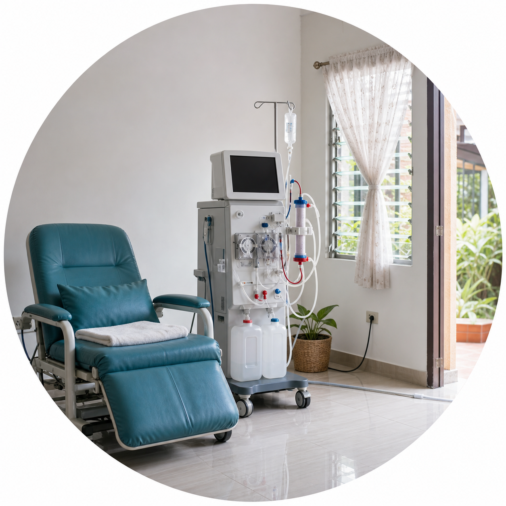

A Perspective on Kidney Policy · PhilippinesPananaw sa Patakaran sa Bato · PilipinasPanglantaw sa Palisiya sa Kidney · PilipinasPamanlawe king Patakaran king Balugbug · Pilipinas
Why home hemodialysis is hard to run in the Philippines.Bakit mahirap patakbuhin ang home hemodialysis sa Pilipinas.Nganong lisod padaganon ang home hemodialysis sa Pilipinas.Bakit mahirap paguluran ing home hemodialysis king Pilipinas.
Home dialysis can give back travel time and flexibility. But home hemodialysis moves an entire clinical, technical and emergency system across the patient's front door — and in the Philippines that system does not yet have a clearly defined national pathway.Ang home dialysis ay makakapagbalik ng oras sa biyahe at kaluwagan sa iskedyul. Ngunit ang home hemodialysis ay naglilipat ng buong klinikal, teknikal at pang-emerhensiyang sistema sa loob ng pinto ng pasyente — at sa Pilipinas, wala pang malinaw na pambansang daan para dito.Ang home dialysis makahatag balik sa oras sa pagbiyahe ug kalig-on sa iskedyul. Apan ang home hemodialysis magbalhin sa tibuok klinikal, teknikal ug emerhensiyang sistema sulod sa pultahan sa pasyente — ug sa Pilipinas, wala pay klaro nga nasudnong dalan para niini.Ing home dialysis makapamie yang pasibayu king oras king pamaglakbe at kaluwagan king iskedyul. Dapot ing home hemodialysis milipat ne ing mabilug a klinikal, teknikal at pang-emergency a sistema king kilub ning pasbul ning pasyente — at king Pilipinas, ala pang malinaw a dalan pambansa para kaniti.
PublishedNailathalaGipatikPepalwal:ReferencesMga SanggunianMga TinubdanReng Reperensya:19Evidence checked 17 August 2026Ebidensyang sinuri 17 Agosto 2026Ebidensya nga gisusi 17 Agosto 2026Ebidensyang sinalikut 17 Agostu 2026Read timeOras ng pagbasaOras sa pagbasaOras ning pamamasa:
What this page is A policy perspective, not medical adviceAno ang pahinang ito Pananaw sa patakaran, hindi payong medikalUnsa kini nga panid Panglantaw sa palisiya, dili tambag medikalNanu ing pisamban a ini Pamanlawe king patakaran, e payu medikal
The core idea HHD is a program, not an applianceAng pangunahing ideya Ang HHD ay programa, hindi kagamitanAng sentrong ideya Ang HHD usa ka programa, dili gamitIng pekamaragul a kaisipan Ing HHD metung yang programa, e kasangkapan

The thesis of this perspective: home hemodialysis is difficult to run in the Philippines because it moves a high-risk clinical system into a household, while regulation, payment, workforce, supply chains, utilities and emergency response remain organized around dialysis clinics. No single barrier explains the problem — the barriers reinforce one another.Ang pangunahing punto ng pananaw na ito: mahirap patakbuhin ang home hemodialysis sa Pilipinas dahil inilalagay nito ang isang mataas-ang-panganib na klinikal na sistema sa loob ng bahay, samantalang ang regulasyon, bayad, tauhan, suplay, utilities at tugon sa emerhensiya ay nakaayos pa rin sa mga klinika ng dialysis. Walang iisang balakid ang sagot — nagpapalakasan ang mga balakid.Ang tema niini nga panglantaw: lisod padaganon ang home hemodialysis sa Pilipinas kay gibalhin niini ang taas-og-risgo nga klinikal nga sistema ngadto sa balay, samtang ang regulasyon, bayad, trabahante, suplay, utilities ug tubag sa emerhensiya nagpabilin nga giayo alang sa mga klinika sa dialysis. Walay usa ka babag ang tubag — nagpalig-onay ang mga babag.Ing tema ning pamanlawe a ini: mahirap paguluran ing home hemodialysis king Pilipinas uling ilipat ne ing matas-ya-ing-peligru a klinikal a sistema king kilub ning bale, kabang ing regulasyon, bayad, magobra, suplay, utilities at pamanugun king emergency mitutuknang la king klinika ning dialysis. Alang metung a sagabal ing sagot — mipapasikanan la reng sagabal.
⛔
This page does not tell anyone how to dialyze at homeHindi tinuturo ng pahinang ito kung paano mag-dialysis sa bahayWala kini nagtudlo unsaon pag-dialysis sa balayE na tuturu ning pisamban a ini nung makananu ing mag-dialysis king bale
This is a health-system and policy perspective. It contains no instructions for needle insertion, machine setup, disinfection, dialysate preparation, alarm handling, medication dosing or emergency blood return, and it does not decide whether home hemodialysis is right for any individual. Those decisions belong to a nephrologist and an authorized, trained care team. In an emergency, contact local emergency services and your dialysis unit.Ito ay pananaw sa sistema ng kalusugan at patakaran. Walang panuto rito tungkol sa pagtusok ng karayom, pag-set up ng makina, disimpeksyon, paghahanda ng dialysate, pagtugon sa alarma, dosis ng gamot o emergency blood return, at hindi nito pinagpapasyahan kung tama ang home hemodialysis para sa sinuman. Sa nephrologist at sanay na koponan ang mga desisyong iyon. Sa emerhensiya, tumawag sa lokal na emergency services at sa iyong dialysis unit.Kini usa ka panglantaw sa sistema sa panglawas ug palisiya. Walay instruksyon dinhi bahin sa pagtusok sa dagom, pag-set up sa makina, disimpeksyon, pag-andam og dialysate, pagtubag sa alarma, dosis sa tambal o emergency blood return, ug wala kini magdesisyon kon angay ba ang home hemodialysis kang bisan kinsa. Ang maong desisyon iya sa nephrologist ug sa bansay nga tim. Sa emerhensiya, tawag sa lokal nga emergency services ug sa imong dialysis unit.Metung yang pamanlawe king sistema ning katawan at patakaran. Alang tuturu keni tungkul king pamanuldul karayum, pamag-set up makina, disimpeksyon, pamaglagyu dialysate, pamanugun king alarma, dosis ning gamut o emergency blood return, at e na dedesisyunan nung ustu ing home hemodialysis para king ninuman. Kareng nephrologist at bansay a tim la reng desisyun a ita. King emergency, awsan me ing lokal a emergency services at ing kekang dialysis unit.
The whole argument in one image: everything the clinic supplies as a building — trained staff, treated water, backup power, spare parts, emergency response — has to be re-created as a service that reaches one living room. Home hemodialysis does not remove that system; it stretches it.
HHD
Home hemodialysis
HD
Hemodialysis
HDC
Hemodialysis clinic — the DOH-licensed facility type Philippine rules are written around
Evidence status
Clinical modelEstablished internationally
Philippine HHD pathwayNot clearly defined in the public guidance reviewed
Current PhilHealth supportCenter-based HD and home PD are explicitly described
Evidence gapNo public national HHD utilization count located
Evidence checked 17 August 2026Not medical advicePolicy claims require re-verification before any program launch
What home hemodialysis is — and what it is notAno ang home hemodialysis — at ano ang hindiUnsa ang home hemodialysis — ug unsa ang diliNanu ing home hemodialysis — at nanu ing ali
Home hemodialysis, usually shortened to HHD, means running hemodialysis treatments inside a person's own house instead of traveling to a dialysis clinic. The blood is still cleaned by a machine and a filter, exactly as in a clinic. What changes is the address — and, with it, who does the work, who watches for trouble, and who fixes things when they go wrong.Ang home hemodialysis, madalas dinadaglat na HHD, ay ang pagsasagawa ng hemodialysis sa loob ng sariling bahay sa halip na magbiyahe papunta sa dialysis clinic. Nililinis pa rin ang dugo ng makina at salaan, katulad sa klinika. Ang nagbabago ay ang lugar — at kasama nito, kung sino ang gagawa, sino ang magbabantay, at sino ang aayos kapag may nasira.Ang home hemodialysis, kasagaran gimubo nga HHD, nagpasabot sa pagpahigayon sa hemodialysis sulod sa kaugalingong balay imbis mobiyahe padulong sa dialysis clinic. Ang dugo gilimpyohan gihapon sa makina ug salaan, sama ra sa klinika. Ang mausab mao ang dapit — ug uban niini, kinsa ang mobuhat, kinsa ang mobantay, ug kinsa ang moayo kon adunay masira.Ing home hemodialysis, karaniwan a papaimpisan HHD, buri nang sabian ing pamaggawa hemodialysis king kilub ning sariling bale imbis magbiyahe papunta king dialysis clinic. Linisan ne pa murin ing daya ning makina at salaan, anti mu king klinika. Ing mag-iba ya ing lugal — at kayabe niti, ninu ing gagawa, ninu ing mamanti, at ninu ing mangayus nung atin mesira.
💡
Two different home therapiesDalawang magkaibang home therapyDuha ka lahi nga home therapyAduang aliwang home therapy
Home peritoneal dialysis (PD) uses the lining of the belly and bags of fluid — no blood circuit, no machine that needs treated water. Home hemodialysis (HHD) uses needles, a blood circuit, and a machine that must be supplied with dialysis-grade fluid. They are not the same therapy and they do not have the same risks, contraindications or supply needs. In the Philippines today, home PD has a clearly described benefit route; home HD does not.Ang home peritoneal dialysis (PD) ay gumagamit ng lining ng tiyan at mga supot ng likido — walang daluyan ng dugo, walang makinang nangangailangan ng ginamot na tubig. Ang home hemodialysis (HHD) ay gumagamit ng karayom, daluyan ng dugo, at makinang kailangang bigyan ng dialysis-grade na likido. Hindi sila magkaparehong therapy at hindi pareho ang panganib, kontraindikasyon o pangangailangan sa suplay. Sa Pilipinas ngayon, may malinaw na ruta ng benepisyo ang home PD; ang home HD ay wala.Ang home peritoneal dialysis (PD) mogamit sa lining sa tiyan ug mga bag sa likido — walay agianan sa dugo, walay makina nga nagkinahanglan og tinambalan nga tubig. Ang home hemodialysis (HHD) mogamit og dagom, agianan sa dugo, ug makina nga kinahanglan hatagan og dialysis-grade nga likido. Dili sila parehas nga therapy ug dili parehas ang risgo, kontraindikasyon o panginahanglan sa suplay. Sa Pilipinas karon, adunay klarong ruta sa benepisyo ang home PD; ang home HD wala.Ing home peritoneal dialysis (PD) gagamit yang lining ning atian at supot dang danum — alang agyan daya, alang makina a kailangan tubig a megamut. Ing home hemodialysis (HHD) gagamit yang karayum, agyan daya, at makina a kailangan mibie king dialysis-grade a danum. E la parehu a therapy at e la parehu reng peligru, kontraindikasyon o pangailangan king suplay. King Pilipinas ngeni, atin malinaw a dalan benepisyu ing home PD; ing home HD ala.
🔬
What this page is not sayingAng hindi sinasabi ng pahinang itoAng dili giingon niini nga panidIng e sasabian ning pisamban a ini
It is not saying HHD is unsafe, impossible in Philippine homes, or banned. Around the world it is a real, established option for carefully selected and well-trained people supported by a mature program. It is also not saying that no Filipino has ever received it. What the public record shows is that no complete national pathway — licensing, payment, standards, reporting — was found. Absence of a named pathway is not proof of prohibition.Hindi nito sinasabing delikado ang HHD, imposible sa mga tahanang Pilipino, o ipinagbabawal. Sa buong mundo, tunay at matatag itong opsyon para sa maingat na napiling at sanay na tao na suportado ng matatag na programa. Hindi rin nito sinasabing walang Pilipinong nakatanggap nito. Ang ipinapakita ng pampublikong tala ay walang natagpuang kumpletong pambansang daan — lisensya, bayad, pamantayan, pag-uulat. Ang kawalan ng nakapangalang daan ay hindi patunay ng pagbabawal.Wala kini nag-ingon nga delikado ang HHD, imposible sa Pilipinhong balay, o gidili. Sa tibuok kalibotan, tinuod ug lig-on kini nga kapilian alang sa maampingong napili ug bansay nga tawo nga gisuportahan sa hamtong nga programa. Wala usab kini nag-ingon nga walay Pilipinhon nga nakadawat niini. Ang gipakita sa publikong rekord mao nga walay nakit-an nga kompletong nasudnong dalan — lisensya, bayad, sumbanan, pagreport. Ang pagkawala sa nganlang dalan dili pamatuod sa pagdili.E na sasabian a peligru ya ing HHD, imposible king bale Pilipinu, o mibawal. King mabilug a yatu, tutu at matatag yang pipamilian para kareng maingat a mepili at bansay a tau a misusuportan ning matatag a programa. E na rin sasabian a alang Pilipinu a mekatanggap kaniti. Ing pakit ning publiku a tala, alang mekit a kumpletung dalan pambansa — lisensya, bayad, pamantayan, pamagreport. Ing kawalan ning mepangalanan a dalan e ya patune ning pamagbawal.
What Is Actually HappeningAno ang Talagang NangyayariUnsa ang Tinuod nga NahitaboNanu Ing Talagang Malyari
Three things happen in every treatment — and each one explains a ruleTatlong bagay ang nangyayari sa bawat treatment — at bawat isa ay may ipinapaliwanag na patakaranTulo ka butang ang mahitabo sa matag treatment — ug ang matag usa nagpasabot og usa ka lagdaAtlung bage ing malyari king balang treatment — at balang metung atin patakaran a papaliwanan na
The rules around home hemodialysis can look like paperwork. They are not. Each one exists because of something physical that happens to the body during every single session. Understanding those three things makes the rest of this page make sense.Maaaring mukhang papeles lang ang mga patakaran sa home hemodialysis. Hindi. Bawat isa ay may kinalaman sa isang pisikal na bagay na nangyayari sa katawan sa bawat sesyon. Kapag naintindihan mo ang tatlong ito, magiging malinaw ang natitirang bahagi ng pahinang ito.Ang mga lagda bahin sa home hemodialysis morag papeles lang. Dili. Ang matag usa naa tungod sa usa ka pisikal nga butang nga mahitabo sa lawas sa matag sesyon. Kon masabtan nimo kining tulo, mahimong klaro ang nahibiling bahin niini nga panid.Deng patakaran tungkul king home hemodialysis malyaring lupang papil mu. Ali. Balang metung atyu uling atin pisikal a bage a malyari king katawan king balang sesyon. Nung abalu mu deng atlu a reti, malinaw ne ing tinagan a dake ning pisamban a ini.
1. Your blood leaves your body — all of it, many times over1. Lumalabas ang dugo mo sa katawan — lahat ito, paulit-ulit1. Mogawas ang imong dugo sa lawas — tanan kini, balik-balik1. Lulwal ya ing daya mu king katawan — eganagana, paulit-ulit
During a four-hour treatment, roughly seventy to a hundred liters of blood are pumped out through a needle, through the filter, and back through a second needle. Your whole blood supply makes that trip about once every minute and a half. That is why one particular accident — a needle slipping out while the pump keeps running — is the event every home program is designed around. In a clinic, a trained person is in the room watching. At home, that watching has to be replaced by training, by taping protocols, by alarms, and by someone reachable at any hour.Sa apat na oras na treatment, humigit-kumulang pitumpu hanggang isang daang litro ng dugo ang ibinobomba palabas sa isang karayom, dumadaan sa salaan, at bumabalik sa pangalawang karayom. Ang buong dugo mo ay umiikot nang ganito halos kada isa't kalahating minuto. Kaya ang isang aksidente — ang pagkalas ng karayom habang tumatakbo ang bomba — ang pinaka-iniiwasan ng bawat home program. Sa klinika, may sanay na taong nakabantay sa loob ng kuwarto. Sa bahay, kailangang palitan ang pagbabantay na iyon ng pagsasanay, tamang pagtetape, alarma, at taong matatawagan anumang oras.Sulod sa upat ka oras nga treatment, mga kapitoan ngadto sa usa ka gatos ka litro sa dugo ang gibomba pagawas latas sa dagom, latas sa salaan, ug mobalik latas sa ikaduhang dagom. Ang tibuok nimong dugo molibot sa ingon niini matag usa ug tunga ka minuto. Mao nga usa ka aksidente — ang pagkatangtang sa dagom samtang nagdagan ang bomba — ang gilikayan sa matag home program. Sa klinika, adunay bansay nga tawo nga nagbantay sulod sa kwarto. Sa balay, kinahanglan ilisan kanang pagbantay sa pagbansay, hustong pagtape, alarma, ug tawo nga matawagan bisan unsang oras.King apat a oras a treatment, manga pitumpulu angga king dinalan a litru ning daya ing bobomba palual kapamilatan ning karayum, dumalan king salaan, at mibabalik kapamilatan ning kaduang karayum. Ing mabilug mung daya mikot yang anti kaniti balang metung at kapitna minutu. Inya ing metung a aksidente — ing pamagkalas ning karayum kabang lulakad ing bomba — ya ing lilikasan ning balang home program. King klinika, atin bansay a tau a mamanti king kilub ning kwartu. King bale, kailangan yang salyuan ing pamamanti a ita ning pamagsanay, ustung pamagtape, alarma, at taung maus nokarin mang oras.
2. About 120 liters of water pass beside your blood — that is why the water rules are strict2. Humigit-kumulang 120 litro ng tubig ang dumadaan sa tabi ng dugo mo — kaya mahigpit ang patakaran sa tubig2. Mga 120 ka litro sa tubig ang moagi tapad sa imong dugo — mao nga istrikto ang lagda sa tubig2. Manga 120 litru ning danum ing dumalan king siping ning daya mu — inya mahigpit ing patakaran king danum
Inside the filter, your blood is separated from the machine's fluid by a membrane thinner than tissue paper. Over one session, about 120 liters of that fluid flow past your blood. Compare that with the two liters of water you drink in a day — which passes through your gut, a selective barrier, and then through your liver, which cleans it. Neither of those protections exists here.Sa loob ng salaan, hinihiwalay ang dugo mo sa likido ng makina ng isang lamad na mas manipis pa sa papel de banyo. Sa isang sesyon, humigit-kumulang 120 litro ng likidong iyon ang dumadaloy sa tabi ng dugo mo. Ihambing iyan sa dalawang litrong tubig na iniinom mo sa isang araw — na dumadaan sa bituka mo, isang mapili na harang, at pagkatapos sa atay mo, na naglilinis nito. Wala ang dalawang proteksyong iyon dito.Sulod sa salaan, ang imong dugo gibulag sa likido sa makina sa usa ka lamad nga mas nipis pa sa papel de banyo. Sulod sa usa ka sesyon, mga 120 ka litro niadtong likido ang moagos tapad sa imong dugo. Itandi kana sa duha ka litro nga tubig nga imong giinom sa usa ka adlaw — nga moagi sa imong tinai, usa ka mapilion nga babag, ug unya sa imong atay, nga naglimpyo niini. Wala kanang duha ka panalipod dinhi.King kilub ning salaan, misalibut ing daya mu king danum ning makina kapamilatan ning metung a lamad a mas manipis pa king papil de banyu. King metung a sesyon, manga 120 litru ning danum a ita ing dumaloy king siping ning daya mu. Itandi me ita king aduang litru a danum a inuman mu king metung a aldo — a dumalan king bituka mu, metung a mamiling arang, at kaybat king ate mu, a lilinisan ne. Ala reng aduang proteksyon a ita keni.
So something harmless in a glass of water can be harmful here, simply because sixty times more of it arrives, straight beside the blood, with no liver in between. Chloramine — added to city water on purpose, to keep it safe — can damage red blood cells. Aluminum can build up in bone and brain. Fragments of dead bacteria, which survive in water that tastes perfectly clean, can cause ongoing inflammation. That is the whole reason dialysis water must be specially treated, tested on a schedule, and signed off by a technician — and the reason a clean-tasting tap, a good refilling station, or a home filter cannot answer the question on its own.Kaya ang isang bagay na hindi nakakasama sa isang basong tubig ay maaaring makasama rito, dahil lang animnapung beses na mas marami ang dumarating, katabi mismo ng dugo, na walang atay sa gitna. Ang chloramine — sinasadyang idinaragdag sa tubig ng lungsod para ligtas ito — ay maaaring makasira ng pulang selula ng dugo. Ang aluminyo ay maaaring maipon sa buto at utak. Ang mga piraso ng patay na bakterya, na nananatili sa tubig na malinis ang lasa, ay maaaring magdulot ng patuloy na pamamaga. Iyan ang buong dahilan kung bakit kailangang espesyal na gamutin ang tubig para sa dialysis, suriin nang naka-iskedyul, at aprubahan ng tekniko — at kung bakit hindi kayang sagutin ng malinis na gripo, magandang refilling station, o filter sa bahay ang tanong na ito nang mag-isa.Busa ang usa ka butang nga dili makadaot sa usa ka baso nga tubig mahimong makadaot dinhi, tungod lang kay kan-uman ka pilo nga mas daghan ang moabot, tapad mismo sa dugo, nga walay atay sa taliwala. Ang chloramine — tinuyo nga gidugang sa tubig sa siyudad aron luwas kini — makadaot sa pula nga selula sa dugo. Ang aluminyo mahimong motigom sa bukog ug utok. Ang mga tipik sa patay nga bakterya, nga mabuhi sa tubig nga limpyo ang lami, mahimong mohatag og padayon nga hubag. Kana ang tibuok rason nganong kinahanglan espesyal nga tambalan ang tubig alang sa dialysis, susihon sumala sa iskedyul, ug aprobahan sa tekniko — ug nganong dili matubag sa limpyo nga gripo, maayong refilling station, o filter sa balay kini nga pangutana nga mag-inusara.Inya ing metung a bage a e makasama king metung a basu a danum malyari yang makasama keni, uling mu anam a pulu a beses a mas dakal ing dumatang, siping mismu ning daya, a alang ate king libutad. Ing chloramine — sadyang midagdag king danum ning siudad ba yang ligtas — malyari yang makasira kareng malutu a selula ning daya. Ing aluminyu malyari yang mitipun king butul at utak. Deng pirasu da reng mete a bakterya, a manatili king danum a malinis ing nanam, malyari lang magdala tuluy-tuluy a pamamaga. Ita ing mabilug a dahilan bakit kailangan yang espesyal a gamutan ing danum para king dialysis, salikutan agpang king iskedyul, at aprubahan ning tekniku — at bakit e da kayang sagutan ning malinis a gripu, mayap a refilling station, o filter king bale ing kutang a ini a mag-isa.
Two liters of drinking water a day crosses the gut wall and then passes the liver before reaching the bloodstream. About 120 liters of dialysis fluid per treatment meets the blood directly across a thin membrane, with neither of those protections in between. Roughly sixty times the volume, and none of the filtering — which is why dialysis water is held to its own engineering standard rather than a drinking-water one.
ISO 23500
The international standard series governing the chemical purity and microbial quality of fluids used for hemodialysis
3. Fluid is pulled out faster than your body can refill the bloodstream3. Mas mabilis hinuhugot ang likido kaysa kayang punan ng katawan mo ang daluyan ng dugo3. Mas paspas gikuha ang likido kaysa makahimo ang imong lawas mopuno sa dugo3. Mas masiglu ing pamanikwa king danum kesa king kayang pamanam ning katawan mu king agyan ning daya
The machine takes water out of the blood, not directly out of the swollen legs. Fluid then has to move from the tissues back into the bloodstream to replace it — and it can only move so fast. Pull faster than the body can refill and the blood pressure drops, which is why people feel dizzy, cramp, or become unwell near the end of a session. This is also why more frequent or longer treatments are attractive in principle: the same weekly fluid comes off more gently. Whether that gentler removal actually makes people live longer or feel better is a separate question, and an honest answer is that the trials have been less encouraging than the idea.Kinukuha ng makina ang tubig mula sa dugo, hindi diretso mula sa namamagang binti. Kailangang lumipat ang likido mula sa laman pabalik sa dugo para palitan ito — at may hangganan ang bilis nito. Kung mas mabilis ang paghugot kaysa sa kayang punan ng katawan, bumababa ang presyon ng dugo, kaya nahihilo, nangangalambre, o nanghihina ang tao malapit sa katapusan ng sesyon. Ito rin ang dahilan kung bakit kaakit-akit sa prinsipyo ang mas madalas o mas mahabang treatment: mas marahan ang pagtanggal ng parehong dami ng likido bawat linggo. Kung talagang mas humahaba ang buhay o gumagaan ang pakiramdam dahil dito ay hiwalay na tanong, at ang tapat na sagot ay hindi ganoon kaganda ang resulta ng mga pag-aaral kumpara sa ideya.Ang makina mokuha sa tubig gikan sa dugo, dili direkta gikan sa nanghubag nga bitiis. Ang likido kinahanglan mobalhin gikan sa unod balik sa dugo aron ilisan kini — ug adunay kinutuban ang katulin niini. Kon mas paspas ang pagkuha kaysa makahimo ang lawas mopuno, mokunhod ang presyon sa dugo, mao nga malipong, mangalambre, o maluya ang tawo duol sa katapusan sa sesyon. Kini usab ang rason nganong madanihon sa prinsipyo ang mas subsob o mas taas nga treatment: mas hinay ang pagkuha sa samang gidaghanon sa likido matag semana. Kon tinuod ba nga motaas ang kinabuhi o mogaan ang pamati tungod niini usa ka bulag nga pangutana, ug ang matinud-anong tubag mao nga dili kaayo madasigon ang resulta sa mga pagtuon kompara sa ideya.Ing makina kukwa ne ing danum manibat king daya, e diretsu manibat kareng mamaga a bitis. Kailangan yang milipat ing danum manibat king laman pabalik king daya ba yang salyuan — at atin angganan ing kasiglwan na. Nung mas masiglu ing pamanikwa kesa king kayang pamanam ning katawan, mababa ya ing presyon ning daya, inya malilyung, mangalambri, o manglupaypay ing tau malapit king kapupusan ning sesyon. Iti ya rin ing dahilan bakit makayakit king prinsipyu ing mas mirakal o mas makaba a treatment: mas marimla ing pamanikwa king parehung dake ning danum balang dinalan. Nung talaga yang mikakaba ing bie o mikakayan ing pakiramdam uling kaniti metung yang misalibut a kutang, at ing tapat a sagot ya ing e la ganu kayap deng resulta da reng pamanaliksik kesa king kaisipan.
The Core IdeaAng Pangunahing IdeyaAng Sentrong IdeyaIng Pekamaragul a Kaisipan
It is a program, not an applianceIsa itong programa, hindi kagamitanUsa kini ka programa, dili gamitMetung yang programa, e kasangkapan
The most common misunderstanding about HHD is that it means buying a machine. In reality the machine is the smallest part. A safe home program has to carry six layers across the front door, and every layer has to keep working on a bad day — a brownout, a typhoon, a fever at 2 a.m.Ang pinakakaraniwang maling akala tungkol sa HHD ay ang pagbili ng makina. Sa totoo, ang makina ang pinakamaliit na bahagi. Ang ligtas na home program ay kailangang magdala ng anim na antas sa loob ng pinto, at bawat antas ay dapat gumana kahit sa masamang araw — brownout, bagyo, lagnat nang alas-dos ng madaling araw.Ang labing kasagarang sayop nga sabot bahin sa HHD mao nga pagpalit kini og makina. Sa tinuod, ang makina mao ang pinakagamay nga bahin. Ang luwas nga home program kinahanglan modala og unom ka lut-od sulod sa pultahan, ug ang matag lut-od kinahanglan molihok bisan sa daotang adlaw — brownout, bagyo, hilanat alas-dos sa kaadlawon.Ing pekakaraniwan a mali a akala tungkul king HHD ya ing pamanyaling makina. King katutuan, ing makina ya ing pekamalati a dake. Ing ligtas a home program kailangan nang midala anam a antas king kilub ning pasbul, at balang antas kailangan mag-obra agyang king marok a aldo — brownout, bagyu, pamalgu king alas-dos ning abak.
Home hemodialysis is not a machine purchase. Six separate systems have to reach the house — clinical oversight, training, technical service, round-the-clock support, an emergency network, and governance — and the machine itself is the smallest part of the list. Each layer also has to keep working on the worst day, not just an ordinary one.
LayerAntasLut-odAntas
What has to cross the front doorAno ang dapat dumaan sa pintoUnsa ang kinahanglan moagi sa pultahanNanu ing kailangan dumalan king pasbul
ClinicalKlinikalKlinikalKlinikal
Nephrologist oversight, the treatment prescription, care of the vascular access, medicine review, laboratory monitoring, and regular checks that enough fluid and waste are being removed.Pangangasiwa ng nephrologist, reseta ng paggamot, pag-aalaga sa vascular access, pagsusuri ng gamot, pagsubaybay sa laboratoryo, at regular na pagtingin kung sapat ang naaalis na likido at dumi.Pagdumala sa nephrologist, reseta sa tambal, pag-atiman sa vascular access, pagsusi sa tambal, pagbantay sa laboratoryo, ug regular nga pagsusi kon igo ba ang gikuha nga likido ug hugaw.Pamanibala ning nephrologist, reseta ning lunas, pamag-ingat king vascular access, pamanalik gamut, pamanaliksik laboratoryo, at regular a pamanlawe nung sapat ing meyalis a danum at dumi.
TrainingPagsasanayPagbansayPamagsanay
Weeks of supervised teaching for the patient and, usually, a care partner; a test of real competence rather than attendance; refresher training; and someone watching for exhaustion.Linggo-linggong pagtuturo na may gabay para sa pasyente at, kadalasan, sa care partner; pagsusuri ng tunay na kakayahan, hindi lang pagdalo; refresher; at may nagbabantay sa pagkapagod.Mga semana sa gibantayang pagtudlo alang sa pasyente ug, kasagaran, sa care partner; pagsulay sa tinuod nga katakos, dili lang pagtambong; refresher; ug adunay nagbantay sa kakapoy.Dinalan a pamituru a atin gabay para king pasyente at, karaniwan, king care partner; pamanalik king tutung kayang gawan, e mu pamamun; refresher; at atin mamanti king kapaguran.
TechnicalTeknikalTeknikalTeknikal
A machine authorized for home use, the water or dialysate arrangement that machine requires, safe wiring, drainage, planned maintenance, consumables, and waste disposal.Makinang pinahihintulutan sa bahay, ang kaayusan ng tubig o dialysate na kailangan nito, ligtas na kuryente, kanal, nakaplanong maintenance, mga gamit-nauubos, at pagtatapon ng basura.Makina nga gitugotan alang sa balay, ang kahikayan sa tubig o dialysate nga gikinahanglan niini, luwas nga koryente, kanal, giplanong maintenance, mga magamit-mahurot, ug paglabay sa basura.Makina a mitugutan king bale, ing pamituknang ning danum o dialysate a kailangan na, ligtas a kuryenti, kanal, meplanung maintenance, deng gamit-mapupus, at pamagtapun basura.
Remote supportSuportang malayuanSuporta gikan sa layoSuporta manibat karayu
Someone to call at any hour for both clinical and machine problems, treatment records that reach the team, and a way to notice when a treatment was missed.May matatawagan anumang oras para sa problemang klinikal at sa makina, mga talaan ng paggamot na nakakarating sa koponan, at paraan para mapansin kung may nalaktawang treatment.Adunay matawagan bisan unsang oras alang sa klinikal ug makina nga problema, mga rekord sa pagtambal nga makaabot sa tim, ug paagi aron mamatikdan kon adunay nalaktawang treatment.Atin maus nokarin mang oras para king klinikal at makina a problema, deng tala ning lunas a makaras king tim, at paralan bang akit nung atin melaktawan a treatment.
Emergency networkUgnayang pang-emerhensiyaNetwork sa emerhensiyaUgne pang-emergency
A plan for power and water failure, a route to hospital, a guaranteed backup slot at a licensed clinic, and a disaster plan that survives a typhoon week.Plano kapag nawalan ng kuryente at tubig, ruta papuntang ospital, tiyak na backup slot sa lisensyadong klinika, at planong pangkalamidad na kayang tumagal ng isang linggong bagyo.Plano kon mawala ang koryente ug tubig, ruta padulong ospital, siguradong backup slot sa lisensyadong klinika, ug plano sa kalamidad nga makalahutay og usa ka semana nga bagyo.Plano nung mawala ing kuryenti at danum, dalan papunta ospital, siguradung backup slot king lisensyadu a klinika, at planung pangkalamidad a makatagal metung a dinalan a bagyu.
GovernancePamamahalaPagdumalaPamanibala
Informed choice, a home assessment, infection prevention, incident reporting, quality measures, privacy of data, contracts, liability, and payer rules.Maalam na pagpili, pagsusuri ng bahay, pag-iwas sa impeksyon, pag-uulat ng insidente, sukatan ng kalidad, pribasiya ng datos, kontrata, pananagutan, at patakaran ng nagbabayad.Nasayrang pagpili, pagsusi sa balay, pagpugong sa impeksyon, pagreport sa insidente, sukdanan sa kalidad, pribasiya sa datos, kontrata, tulubagon, ug lagda sa magbabayad.Maalam a pamamili, pamanaliksik bale, pamaglikas king impeksyon, pamagreport insidente, sukad ning kalidad, pribasiya ning datos, kontrata, pananagutan, at patakaran ning magbayad.
These requirements also differ sharply between machine types, and the difference is mostly about water. A conventional machine needs its own water-treatment plant plumbed into the house. A low-dialysate-volume machine can instead run from a compact or portable reverse-osmosis (RO) unit that rolls up to an ordinary tap and a standard outlet. A third kind uses pre-made bags of sterile dialysate and treats no water at home at all. These three do not need the same plumbing, the same power, the same drainage or the same storage — which is why no honest guide can publish one universal checklist, and why the first question to ask about any offer is which machine, in which configuration.Malaki rin ang pagkakaiba ng mga pangangailangang ito ayon sa uri ng makina, at halos tungkol sa tubig ang pagkakaiba. Ang karaniwang makina ay nangangailangan ng sariling planta ng paglilinis ng tubig na nakakabit sa tubo ng bahay. Ang makinang mababa ang gamit na dialysate ay maaaring patakbuhin mula sa siksik o portable na reverse-osmosis (RO) na yunit na maitutulak lang sa ordinaryong gripo at saksakan. May ikatlong uri na gumagamit ng handa nang supot ng steril na dialysate at wala nang ginagamot na tubig sa bahay. Hindi pareho ang kailangang tubo, kuryente, kanal o imbakan ng tatlong ito — kaya walang tapat na gabay ang makakapaglathala ng iisang unibersal na checklist, at kaya ang unang itatanong sa anumang alok ay kung aling makina, sa aling konpigurasyon.Dako usab ang kalainan niini nga panginahanglan sumala sa matang sa makina, ug halos bahin sa tubig ang kalainan. Ang naandang makina nagkinahanglan og kaugalingong planta sa paglimpyo sa tubig nga gikonektar sa tubo sa balay. Ang makina nga gamay ra og gamit nga dialysate mahimong padaganon gikan sa gamay o portable nga reverse-osmosis (RO) nga yunit nga matulod lang ngadto sa ordinaryong gripo ug saksakan. Adunay ikatulo nga matang nga mogamit og andam nga bag sa steril nga dialysate ug wala nay gitambalan nga tubig sa balay. Dili parehas ang gikinahanglang tubo, koryente, kanal o bodega niining tulo — mao nga walay matinud-anong giya nga makamantala og usa ka unibersal nga checklist, ug mao nga ang unang ipangutana sa bisan unsang tanyag mao kon unsang makinaha, sa unsang konpigurasyon.Maragul ya rin ing pamikakaiba da reng pangailangan a reti agpang king uri ning makina, at halos tungkul king danum ing pamikakaiba. Ing karaniwan a makina kailangan nang sariling planta king pamaglinis danum a mikakabit king tubu ning bale. Ing makina a malati ing gamit a dialysate malyari yang paguluran manibat king siksik o portable a reverse-osmosis (RO) a yunit a matulak mu king karaniwan a gripu at saksakan. Atin katlung uri a gagamit supot a handa nang steril a dialysate at ala nang gagamutan a danum king bale. E la parehu ing kailangan a tubu, kuryenti, kanal o imbakan da reng atlu a reti — inya alang tapat a gabay a makapamalathala metung a unibersal a checklist, at inya ing mumunang ikutang king nanumang alok ya ing nanung makina, king nanung konpigurasyon.
The Philippine PictureAng Larawan sa PilipinasAng Hulagway sa PilipinasIng Litratu King Pilipinas
Five numbers, each with a caveatLimang numero, bawat isa may paalalaLima ka numero, ang matag usa adunay pahimangnoLimang numeru, balang metung atin paalala
Numbers make an argument feel solid, so each of these carries the limit of what it can actually prove. None of them is a count of Filipinos on home hemodialysis — no such public national count was found.Pinapatibay ng numero ang isang argumento, kaya bawat isa rito ay may hangganan ng kaya nitong patunayan. Wala sa kanila ang bilang ng mga Pilipinong nasa home hemodialysis — walang natagpuang ganoong pampublikong pambansang bilang.Ang numero maghimo sa argumento nga morag lig-on, mao nga ang matag usa niini adunay utlanan sa mapamatud-an niini. Walay usa kanila ang ihap sa mga Pilipinhon nga naa sa home hemodialysis — walay nakit-an nga maong publikong nasudnong ihap.Deng numeru papasikanan da ing argumentu, inya balang metung kareti atin angganan king kayang patunayan. Ala kareti ing bilang da reng Pilipinu a atyu king home hemodialysis — alang mekit a anti kaniting publiku a bilang pambansa.
NumberNumeroNumeroNumeru
What it means — and what it does notAno ang ibig sabihin — at ano ang hindiUnsa ang buot ipasabot — ug unsa ang diliNanu ing buri nang sabian — at nanu ing ali
94%
A 2023 peer-reviewed Philippine perspective reported that about 94% of local patients with kidney failure were on center-based hemodialysis, 4% on peritoneal dialysis and 2% transplanted. It shows how concentrated the country is on one modality. It is that article's reported distribution, drawn from an earlier registry year — it is not a current census and says nothing about HHD.Iniulat ng isang 2023 peer-reviewed na Philippine perspective na humigit-kumulang 94% ng lokal na pasyenteng may kidney failure ay nasa center-based hemodialysis, 4% sa peritoneal dialysis at 2% ang nailipat ng bato. Ipinapakita nito kung gaano nakatuon ang bansa sa isang modalidad. Ito ang iniulat na distribusyon ng artikulong iyon mula sa mas naunang taon ng registry — hindi ito kasalukuyang sensus at walang sinasabi tungkol sa HHD.Usa ka 2023 peer-reviewed nga Philippine perspective ang nagreport nga mga 94% sa lokal nga pasyente nga adunay kidney failure naa sa center-based hemodialysis, 4% sa peritoneal dialysis ug 2% natransplant. Gipakita niini kon unsa ka pundok ang nasod sa usa ka modalidad. Kini ang gireport nga distribusyon niadtong artikulo gikan sa unang tuig sa registry — dili kini karong sensus ug walay giingon bahin sa HHD.Metung a 2023 peer-reviewed a Philippine perspective ing mireport a manga 94% da reng lokal a pasyente a atin kidney failure atyu la king center-based hemodialysis, 4% king peritoneal dialysis at 2% ing mitransplant. Papakit na niti nung makananu kabilug ing bansa king metung a modalidad. Iti ing mireport a distribusyon ning artikulu a ita manibat king minunang banua ning registry — e ya kasalukuyan a sensus at alang sasabian tungkul king HHD.
156
The number of hemodialysis sessions per calendar year covered for eligible, registered patients with CKD stage 5 under the current PhilHealth outpatient hemodialysis package. Confirm before relying on it — circulars are amended.Ang bilang ng hemodialysis sessions kada taon na sakop para sa kwalipikado at nakarehistrong pasyenteng may CKD stage 5 sa ilalim ng kasalukuyang PhilHealth outpatient hemodialysis package. Kumpirmahin bago umasa — nababago ang mga circular.Ang ihap sa hemodialysis sessions matag tuig nga sakop alang sa kwalipikado ug narehistrong pasyente nga adunay CKD stage 5 ubos sa kasamtangang PhilHealth outpatient hemodialysis package. Kumpirmaha una mosalig — mausab ang mga sirkular.Ing bilang da reng hemodialysis session balang banua a sakup para kareng kwalipikadu at mirehistru a pasyente a atin CKD stage 5 king lalam ning kasalukuyan a PhilHealth outpatient hemodialysis package. Kumpirman me bayu ka manalig — mika-iba la reng sirkular.
₱6,350
The published PhilHealth package rate per covered hemodialysis treatment, effective 9 October 2024. A package rate is not the same as the full cost of a treatment, and not the same as the patient's final bill.Ang inilathalang package rate ng PhilHealth kada saklaw na hemodialysis treatment, epektibo 9 Oktubre 2024. Ang package rate ay hindi katumbas ng buong gastos ng paggamot, at hindi rin ng huling babayaran ng pasyente.Ang gimantalang package rate sa PhilHealth matag sakop nga hemodialysis treatment, epektibo 9 Oktubre 2024. Ang package rate dili parehas sa tibuok gasto sa pagtambal, ug dili parehas sa katapusang bayronon sa pasyente.Ing mepalual a package rate ning PhilHealth balang sakup a hemodialysis treatment, epektibu 9 Oktubri 2024. Ing package rate e ya parehu king mabilug a gastus ning lunas, at e ya rin parehu king tauling babayaran ning pasyente.
53.1%
The share of Filipino families with "safely managed" drinking-water service in the preliminary 2024 APIS results. This is a household drinking-water definition. Dialysis water is a separate, much stricter engineering standard — safe to drink does not mean safe to dialyze with.Ang bahagi ng pamilyang Pilipino na may "safely managed" na serbisyo ng inuming tubig sa paunang resulta ng 2024 APIS. Ito ay kahulugan para sa inuming tubig sa bahay. Ang tubig para sa dialysis ay hiwalay at mas mahigpit na pamantayang pang-inhinyero — ang ligtas inumin ay hindi ligtas na pang-dialysis.Ang bahin sa Pilipinhong pamilya nga adunay "safely managed" nga serbisyo sa imnonon nga tubig sa unang resulta sa 2024 APIS. Kini usa ka kahulugan alang sa imnonon nga tubig sa balay. Ang tubig alang sa dialysis usa ka bulag ug mas istrikto nga sumbanan sa inhenyeriya — ang luwas imnon dili luwas idialysis.Ing dake da reng pamilyang Pilipinu a atin "safely managed" a serbisyu ning danum a inuman king mumunang resulta ning 2024 APIS. Iti metung yang kabaldugan para king danum a inuman king bale. Ing danum para king dialysis metung yang misalibut at mas mahigpit a pamantayan pang-inhenyeru — ing ligtas inuman e ya ligtas a pang-dialysis.
6.5%
The share of families who reported at least one instance in 2024 of not having enough drinking water because none was available at the source. This is a national average; a specific street, barangay or island can be far better or far worse.Ang bahagi ng pamilyang nag-ulat ng kahit isang pagkakataon noong 2024 na kulang ang inuming tubig dahil walang available sa pinagkukunan. Ito ay pambansang average; ang isang kalye, barangay o isla ay maaaring mas mabuti o mas malala.Ang bahin sa pamilya nga nagreport og labing menos usa ka higayon sa 2024 nga kulang ang imnonon nga tubig kay walay available sa tinubdan. Kini nasudnong average; ang usa ka dalan, barangay o isla mahimong mas maayo o mas grabe.Ing dake da reng pamilya a mireport agyang metung a beses king 2024 a kulang ing danum a inuman uling alang available king pikuanan. Iti average pambansa; ing metung a dalan, barangay o pulu malyari yang mas mayap o mas marok.
The HouseholdAng SambahayanAng PanimalayIng Pamibale-bale
The house becomes part of the treatmentAng bahay ay nagiging bahagi ng paggamotAng balay mahimong bahin sa pagtambalIng bale magi yang dake ning lunas
In a clinic, the building carries the risk: the water plant, the wiring, the drains, the generator, the cleaning, the stock room, the engineer on call. At home, a specific house has to carry that same weight. This is a conversation to have with a provider and an engineer — not a pass-or-fail checklist to score yourself against.Sa klinika, ang gusali ang nagdadala ng panganib: ang planta ng tubig, kableado, kanal, generator, paglilinis, bodega, at inhinyerong nakaantabay. Sa bahay, ang isang partikular na bahay ang dapat magdala ng parehong bigat. Ito ay usapan sa provider at inhinyero — hindi pasado-o-bagsak na checklist na isusukat mo sa sarili.Sa klinika, ang building ang nagdala sa risgo: ang planta sa tubig, kableado, kanal, generator, paglimpyo, bodega, ug inhenyero nga naa sa tawag. Sa balay, ang usa ka piho nga balay ang kinahanglan modala sa samang gibug-aton. Kini usa ka panag-istoryahay sa provider ug inhenyero — dili pasado-o-hagbong nga checklist nga imong isukod sa kaugalingon.King klinika, ing gusali ing magdala king peligru: ing planta ning danum, kableadu, kanal, generator, pamaglinis, bodega, at inhenyeru a atyu king aus. King bale, ing metung a partikular a bale ing kailangan magdala king parehung bayat. Iti metung yang pisasabyan king provider at inhenyeru — e ya pasa-o-lugpa a checklist a sukaran mu king sarili.
The six things a provider and an engineer would actually walk through in a home: room for the equipment and supplies, water that is suitable rather than merely available, somewhere safe for used fluid to drain, permission to modify the building if you rent, electrical capacity with a plan for losing power mid-treatment, and an address that delivery trucks and technicians can reach year-round. This is a conversation to have, not a test to pass — the deliberate absence of tickboxes and pass-or-fail coloring is the point.
What is being asked of the houseAno ang hinihingi sa bahayUnsa ang gipangayo sa balayNanu ing kikwa king bale
Why it is not simpleBakit hindi ito simpleNganong dili kini yanoBakit e ya simpli
SpaceEspasyoLunaLugal
Room for the machine, a treatment chair or bed, boxes of supplies, medicines, cleaning materials, hand hygiene, and separated waste — kept clean and reachable, not stacked in a corridor.Puwang para sa makina, upuan o kama, kahon ng suplay, gamot, panlinis, paghuhugas ng kamay, at hiwalay na basura — malinis at maaabot, hindi nakasalansan sa pasilyo.Luna alang sa makina, lingkoranan o katre, kahon sa suplay, tambal, panglimpyo, paghugas sa kamot, ug bulag nga basura — limpyo ug maabot, dili gipundok sa koridor.Lugal para king makina, luklukan o pengari, kaha ning suplay, gamut, panlinis, pamanyugse gamat, at misalibut a basura — malinis at abut, e mikatumpuk king pasilyu.
Tenure and permissionPag-aari at pahintulotPanag-iya ug pagtugotPamagkabandi at pamitugut
Renters may need the owner's written consent for plumbing and electrical work. Crowded or informal housing may simply not allow drainage, grounding, storage or privacy changes.Maaaring kailanganin ng umuupa ang nakasulat na pahintulot ng may-ari para sa tubero at kuryente. Sa masikip o impormal na pabahay, maaaring hindi talaga puwede ang kanal, grounding, imbakan o pagbabago para sa pribasiya.Ang nag-abang mahimong magkinahanglan sa sinulat nga pagtugot sa tag-iya alang sa tubero ug koryente. Sa siksik o impormal nga puy-anan, mahimong dili gyud mahimo ang kanal, grounding, bodega o kausaban alang sa pribasiya.Deng mag-arkila malyaring kailangan da ing sinulat a pamitugut ning makibandi para king tubero at kuryenti. King masiksik o impormal a bale, malyaring e talaga malyari ing kanal, grounding, imbakan o pamag-iba para king pribasiya.
WaterTubigTubigDanum
Availability and dialysis suitability are two different questions. Most Filipino families buy drinking water from refilling stations; that pattern says nothing about whether a machine's feed water meets dialysis fluid standards. Suitability has to be measured, treated and then monitored on a schedule. Some home systems use a compact or portable RO unit that connects to an ordinary tap instead of fixed plumbing — often the difference between a rented home being workable or not.Ang pagkakaroon at ang bagay-sa-dialysis ay dalawang magkaibang tanong. Karamihan sa pamilyang Pilipino ay bumibili ng inuming tubig sa refilling station; wala itong sinasabi kung ang tubig na papasok sa makina ay pasado sa pamantayan ng dialysis fluid. Kailangang sukatin, gamutin, at pagkatapos ay subaybayan ang tubig nang naka-iskedyul. May mga home system na gumagamit ng siksik o portable na RO na yunit na ikinakabit sa ordinaryong gripo sa halip na sa nakapirming tubo — madalas itong pagkaiba ng puwede at hindi puwede sa isang inuupahang bahay.Ang pagkaanaa ug ang pagkaangay sa dialysis duha ka lahi nga pangutana. Kadaghanan sa Pilipinhong pamilya mopalit og imnonon nga tubig sa refilling station; walay giingon kana kon ang tubig nga mosulod sa makina mopasar ba sa sumbanan sa dialysis fluid. Kinahanglan sukdon, tambalan, ug unya bantayan ang tubig sumala sa iskedyul. Adunay mga home system nga mogamit og gamay o portable nga RO nga yunit nga gikonektar sa ordinaryong gripo imbis sa permanenteng tubo — kasagaran mao kini ang kalainan tali sa mahimo ug dili mahimo sa usa ka giabangang balay.Ing pamikakayari at ing pamikaangkop king dialysis aduang aliwang kutang. Kalakalan da reng pamilyang Pilipinu sasali lang danum a inuman king refilling station; alang sasabian ita nung ing danum a lulub king makina makapasa ya king pamantayan ning dialysis fluid. Kailangan yang sukatan, gamutan, at kaybat pantian ing danum agpang king iskedyul. Atin home system a gagamit siksik o portable a RO a yunit a mikakabit king karaniwan a gripu imbis king permanenting tubu — karaniwan ini ing pamikakaiba ning malyari at e malyari king metung a mikarkilang bale.
ElectricityKuryenteKoryenteKuryenti
The right voltage and frequency, enough capacity, proper grounding and protection — plus a plan for what happens mid-treatment when the power goes out. Reliability and tariffs differ a great deal between distribution utilities and regions.Tamang boltahe at prekwensiya, sapat na kapasidad, wastong grounding at proteksyon — at plano kung ano ang gagawin kapag nawalan ng kuryente sa gitna ng treatment. Malaki ang pagkakaiba ng katatagan at singil sa bawat distribution utility at rehiyon.Husto nga boltahe ug prekwensiya, igong kapasidad, hustong grounding ug proteksyon — ug plano kon unsay buhaton kon mawad-an og koryente taliwala sa treatment. Dako ang kalainan sa kasaligan ug bayronon sa matag distribution utility ug rehiyon.Ustung boltahe at prekwensiya, sapat a kapasidad, ustung grounding at proteksyon — at planu nung nanu ing gawan nung mawala ing kuryenti king kalibutad ning treatment. Maragul ing pamikakaiba ning katatagan at singil king balang distribution utility at rehiyon.
Used fluid has to drain somewhere safe. Supplies must stay dry, cool and pest-free. Delivery trucks and technicians need to reach the address — and keep reaching it during the rainy season.Kailangang may ligtas na labasan ang nagamit na likido. Dapat manatiling tuyo, malamig at walang peste ang mga suplay. Kailangang marating ng trak at tekniko ang bahay — at patuloy itong marating kahit tag-ulan.Ang nagamit nga likido kinahanglan adunay luwas nga gawasan. Ang suplay kinahanglan magpabiling uga, bugnaw ug walay peste. Ang trak ug tekniko kinahanglan makaabot sa balay — ug magpadayon sa pag-abot bisan sa ting-ulan.Ing megamit a danum kailangan atin ligtas a lulwalan. Deng suplay kailangan manatiling malangi, malamig at alang peste. Kailangan makaras ing trak at tekniku king bale — at tuluy-tuluy yang makaras agyang panaun ning uran.
⚠️
Safe to drink is not safe to dialyze withAng ligtas inumin ay hindi ligtas para sa dialysisAng luwas imnon dili luwas alang sa dialysisIng ligtas inuman e ya ligtas para king dialysis
During one hemodialysis treatment, a large volume of water contacts the blood across a thin membrane — far more than anyone drinks in a day. That is why dialysis fluid is governed by dedicated international standards (the ISO 23500 series) for chemical purity and microbial control, with treatment equipment and scheduled testing. A household water supply, however clean it tastes, is not automatically compliant.Sa isang hemodialysis treatment, malaking dami ng tubig ang nadadaiti sa dugo sa manipis na lamad — higit pa sa iniinom ng sinuman sa isang araw. Kaya may sariling pandaigdigang pamantayan (ISO 23500 series) ang dialysis fluid para sa kemikal na kalinisan at kontrol sa mikrobyo, may kagamitan sa paggamot ng tubig at nakatakdang pagsusuri. Ang tubig sa bahay, gaano man kalinis ang lasa, ay hindi awtomatikong pasado.Sa usa ka hemodialysis treatment, dakong gidaghanon sa tubig ang modikit sa dugo latas sa nipis nga lamad — labaw pa sa giinom ni bisan kinsa sa usa ka adlaw. Mao nga adunay kaugalingong internasyonal nga sumbanan (ISO 23500 series) ang dialysis fluid alang sa kemikal nga kaputli ug kontrol sa mikrobyo, uban ang kagamitan sa pagtambal sa tubig ug gikatakdang pagsulay. Ang tubig sa balay, bisan unsa ka limpyo ang lami, dili awtomatikong pasado.King metung a hemodialysis treatment, maragul a dake ning danum ing dumaptan king daya kapamilatan ning manipis a lamad — mas dakal pa kesa king inuman ning ninuman king metung a aldo. Inya atin sariling pamantayan pandaigdig (ISO 23500 series) ing dialysis fluid para king kemikal a kalinisan at kontrol king mikrobyu, atin kasangkapan king pamaglunas danum at metakdang pamanalik. Ing danum king bale, agyang makananu ya kalinis ing nanam, e ya awtomatikung pasa.
The Human SideAng Panig ng TaoAng Bahin sa TawoIng Dake Ning Tau
You, your care partner, and the work nobody bills forIkaw, ang iyong care partner, at ang trabahong walang bayadIkaw, ang imong care partner, ug ang trabaho nga walay bayadIka, ing kekang care partner, at ing obrang alang bayad
Home hemodialysis moves real work onto the household: preparing the space, weighing, recording observations, handling the access and the circuit, responding to alarms, cleaning up, ordering supplies, arranging laboratory tests, and writing down every treatment. Studies of patients and care partners abroad consistently report the same fears — needles, blood loss, low blood pressure, alarms, and being far from a clinician.Inililipat ng home hemodialysis ang tunay na trabaho sa sambahayan: paghahanda ng espasyo, pagtimbang, pagtatala ng obserbasyon, paghawak sa access at sa circuit, pagtugon sa alarma, paglilinis, pag-order ng suplay, pag-aayos ng lab test, at pagsulat ng bawat treatment. Pare-pareho ang iniulat na takot ng mga pasyente at care partner sa ibang bansa — karayom, pagdurugo, mababang presyon, alarma, at ang malayo sa doktor.Ang home hemodialysis magbalhin sa tinuod nga trabaho ngadto sa panimalay: pag-andam sa luna, pagtimbang, pagrekord sa obserbasyon, paggunit sa access ug circuit, pagtubag sa alarma, paglimpyo, pag-order og suplay, pag-ayo sa lab test, ug pagsulat sa matag treatment. Managsama ang gireport nga kahadlok sa mga pasyente ug care partner sa gawas — dagom, pagdugo, ubos nga presyon, alarma, ug ang layo sa doktor.Ing home hemodialysis milipat ne ing tutung obra king pamibale-bale: pamaglagyu king lugal, pamagtimbang, pamagtala obserbasyon, pamanigit king access at circuit, pamanugun king alarma, pamaglinis, pamag-order suplay, pamaglagyu lab test, at pamanyulat balang treatment. Parehu la reng mireport a takut da reng pasyente at care partner king aliwang bansa — karayum, pamagdaya, mababang presyon, alarma, at ing marayu king doktor.
A care partner can add safety and confidence. But that person is also taking on unpaid labor, interrupted sleep, and a new role inside the family. A Philippine study of home caregivers of hemodialysis patients — people caring for patients treated in clinics, not at home — found they gave about ten and a half hours of care a day, and named cost, missed work, stress and negative feelings among the hardest parts. It is not evidence about HHD, but it is a fair warning about how heavy home kidney care already is here.Nakadaragdag ng kaligtasan at tiwala ang isang care partner. Ngunit nagpapasan din ang taong iyon ng walang-bayad na trabaho, putol na tulog, at bagong papel sa pamilya. Isang pag-aaral sa Pilipinas tungkol sa home caregivers ng mga pasyenteng hemodialysis — mga nag-aalaga sa pasyenteng ginagamot sa klinika, hindi sa bahay — ang nakatagpo na humigit-kumulang sampu't kalahating oras ang inilalaan nila sa pag-aalaga bawat araw, at binanggit ang gastos, hindi pagpasok sa trabaho, stress at negatibong damdamin bilang pinakamahirap. Hindi ito ebidensya tungkol sa HHD, pero patas na babala kung gaano kabigat na ngayon ang pag-aalaga sa bato sa bahay dito.Makadugang og kaluwasan ug pagsalig ang usa ka care partner. Apan ang maong tawo modala usab og walay-bayad nga trabaho, naputol nga tulog, ug bag-ong papel sulod sa pamilya. Usa ka pagtuon sa Pilipinas bahin sa home caregivers sa mga pasyenteng hemodialysis — mga nag-atiman sa pasyente nga gitambalan sa klinika, dili sa balay — nakakaplag nga mga napulo ug tunga ka oras ang ilang gigahin sa pag-atiman matag adlaw, ug gihisgotan ang gasto, wala makatrabaho, stress ug negatibong pagbati isip labing lisod. Dili kini ebidensya bahin sa HHD, apan patas nga pasidaan kon unsa na ka bug-at ang pag-atiman sa kidney sa balay dinhi.Makadagdag yang kaligtasan at tiwala ing metung a care partner. Dapot mikakarga ya rin ing taung ita king alang-bayad a obra, mapatid a tudtud, at bayung papel king kilub ning pamilya. Metung a pamanaliksik king Pilipinas tungkul kareng home caregiver da reng pasyenteng hemodialysis — deng mamag-ingat kareng pasyenteng lulunasan king klinika, e king bale — ing mekit a manga apulu't kapitna oras ing bibie da king pamag-ingat balang aldo, at binanggit da ing gastus, e pamamun king obra, stress at marok a damdam bilang pekamasakit. E ya ebidensya tungkul king HHD, oneng patas yang babala nung makananu na kabayat ing pamag-ingat balugbug king bale keni.
✅
Burden is a design problem, not a verdict on a familyAng bigat ay suliranin sa disenyo, hindi hatol sa pamilyaAng kabug-at usa ka problema sa disenyo, dili hukom sa pamilyaIng bayat metung yang problema king disenyu, e ya hatul king pamilya
Nobody should be told they are unsuitable because they are poor, older, disabled, live alone, or have no relative free to help. Those pressures can be reduced by design — assisted home dialysis with a paid trained helper, retraining when confidence drops, accessible equipment, peer mentoring, respite arrangements, and hybrid schedules that mix home and clinic treatments. Whether a household has an available family member should never be treated as an unquestioned entry requirement.Walang dapat sabihang hindi karapat-dapat dahil mahirap, may edad, may kapansanan, nag-iisa, o walang kamag-anak na makakatulong. Kayang bawasan ang mga presyur na iyon sa pamamagitan ng disenyo — assisted home dialysis na may bayad at sanay na katulong, muling pagsasanay kapag bumaba ang tiwala, kagamitang naa-access, peer mentoring, respite, at halong iskedyul ng bahay at klinika. Hindi dapat ituring na di-matatanong na kailangan ang pagkakaroon ng kamag-anak na libre.Walay angay sultihan nga dili angay tungod kay pobre, tigulang, adunay kakulangan, nag-inusara, o walay paryente nga makatabang. Mahimong makunhoran kanang mga pit-os pinaagi sa disenyo — assisted home dialysis nga adunay bayad ug bansay nga katabang, pagbansay-usab kon mokunhod ang pagsalig, kagamitan nga ma-access, peer mentoring, respite, ug sinagol nga iskedyul sa balay ug klinika. Dili angay isipon nga dili-mapangutan-ang kinahanglanon ang pagbaton og paryente nga libre.Alang dapat sabyan a e ya angkop uling pobri, matua, atin kapansanan, mag-isa, o alang kamaganak a makasaup. Malyaring papaitiban deng presyur a ita kapamilatan ning disenyu — assisted home dialysis a atin bayad at bansay a katulung, pamagsanay pasibayu nung babo ing tiwala, kasangkapan a ma-access, peer mentoring, respite, at mipagsalu a iskedyul ning bale at klinika. E ya dapat isipan a e-makutang a kailangan ing pamikakayari kamaganak a libri.
Practical Next StepPraktikal na Susunod na HakbangPraktikal nga Sunod nga LakangPraktikal a Tutuking Dake
What to ask your kidney teamAno ang itatanong sa iyong kidney teamUnsa ang ipangutana sa imong kidney teamNanu ing ikutang mu king kekang kidney team
If home therapy interests you, the useful next conversation is not "can I buy a machine." These are the questions that tell you whether a real program stands behind an offer.Kung interesado ka sa home therapy, ang kapaki-pakinabang na susunod na usapan ay hindi "makakabili ba ako ng makina." Ito ang mga tanong na magsasabi kung may tunay na programang nakasuporta sa isang alok.Kon interesado ka sa home therapy, ang mapuslanong sunod nga panag-istoryahay dili "makapalit ba ko og makina." Kini ang mga pangutana nga mosulti kanimo kon adunay tinuod nga programa nga nagsuporta sa usa ka tanyag.Nung interesadu ka king home therapy, ing makabaldugan a tutuking pisasabyan e ya "malyari ku waring saling makina." Deti la reng kutang a magsabi keka nung atin tutung programa a susuportan king metung a alok.
Ask before anything is signedItanong bago pumirma ng kahit anoPangutana una mopirma sa bisan unsaIkutang bayu ka pumirma nanuman
1
Which licensed clinic or hospital would be clinically and legally accountable for my treatments at home?Aling lisensyadong klinika o ospital ang mananagot sa klinikal at legal na paraan para sa mga treatment ko sa bahay?Unsang lisensyadong klinika o ospital ang manubag sa klinikal ug legal nga paagi alang sa akong mga treatment sa balay?Nanung lisensyadu a klinika o ospital ing managut king klinikal at legal a paralan para kareng treatment ku king bale?
2
Is the specific machine and its disposables registered with the Philippine FDA for home use?Nakarehistro ba sa Philippine FDA ang partikular na makina at mga disposable nito para sa paggamit sa bahay?Narehistro ba sa Philippine FDA ang piho nga makina ug ang mga disposable niini alang sa paggamit sa balay?Mirehistru ya waring king Philippine FDA ing partikular a makina at deng disposable na para king pamangamit king bale?
3
Exactly which costs are covered by PhilHealth or the provider, and which fall on my family — training, machine, home works, water, power, deliveries, backup sessions?Alin nga ba ang sagot ng PhilHealth o ng provider, at alin ang sa pamilya ko — pagsasanay, makina, pagpapaayos ng bahay, tubig, kuryente, delivery, backup sessions?Unsa gyod ang sakop sa PhilHealth o sa provider, ug unsa ang sa akong pamilya — pagbansay, makina, pag-ayo sa balay, tubig, koryente, delivery, backup sessions?Nanu talaga ing sakup ning PhilHealth o ning provider, at nanu ing king pamilya ku — pamagsanay, makina, pamagayus bale, danum, kuryenti, delivery, backup session?
4
Who answers the phone at 2 a.m., and how quickly can a nurse or technician actually reach my address?Sino ang sasagot sa telepono nang alas-dos ng madaling araw, at gaano kabilis talaga makakarating ang nurse o tekniko sa bahay ko?Kinsa ang motubag sa telepono alas-dos sa kaadlawon, ug unsa ka paspas gyod makaabot ang nurse o tekniko sa akong balay?Ninu ing sumagut king telepunu king alas-dos ning abak, at makananu ya kasiglu talaga makaras ing nurse o tekniku king bale ku?
5
Where will I dialyze if the water fails, the power fails, or the machine breaks — and is that backup slot guaranteed in writing?Saan ako magda-dialysis kung mawalan ng tubig, kuryente, o masira ang makina — at nakasulat bang garantisado ang backup slot na iyon?Asa ko mo-dialysis kon mawala ang tubig, koryente, o maguba ang makina — ug nakasulat ba nga garantisado kanang backup slot?Nokarin ku mag-dialysis nung mawala ing danum, kuryenti, o mesira ing makina — at makasulat ya waring garantisadu ing backup slot a ita?
6
What happens if my care partner gets sick, has to work, or simply cannot continue?Ano ang mangyayari kung magkasakit ang care partner ko, kailangang magtrabaho, o hindi na talaga kaya?Unsay mahitabo kon masakit ang akong care partner, kinahanglang motrabaho, o dili na gyod makahimo?Nanu ing malyari nung magkasakit ing care partner ku, kailangan nang mag-obra, o e ne talaga kaya?
7
If home therapy turns out not to suit me, how do I return to in-center care without losing my slot?Kung hindi pala bagay sa akin ang home therapy, paano ako babalik sa in-center na pag-aalaga nang hindi nawawala ang slot ko?Kon dili diay angay kanako ang home therapy, unsaon nako pagbalik sa in-center nga pag-atiman nga dili mawala ang akong slot?Nung e pala angkop kaku ing home therapy, makananu ku mibalik king in-center a pamag-ingat a e mawala ing slot ku?
The Structural Mismatch
A high-risk clinical system crossing a domestic threshold
Home hemodialysis is clinically feasible; that question was settled elsewhere. The Philippine question is different, and it is an implementation question: can a licensed provider legally hold, safely operate, reliably supply, adequately staff, sustainably finance and credibly monitor a hemodialysis treatment that happens in a private dwelling? The reviewed public record does not yet describe a route by which all six of those can be answered at once.
It helps to separate four kinds of feasibility that are routinely collapsed into one another in modality debates. Clinical feasibility — HHD can be safe and effective for selected, trained people inside a mature program. Program feasibility — a provider must build training, technical, clinical, supply, monitoring, quality and emergency systems that extend into every enrolled home. Household feasibility — a particular dwelling, patient, care partner, water source, electrical service, storage arrangement, communications link and evacuation route must be assessed individually. System readiness — policy, licensing, payment, product authorization, workforce, data reporting and referral networks must support the model. International evidence answers the first. The Philippine gap sits almost entirely in the third and fourth.
The country does not principally lack a machine. It lacks an explicit pathway connecting the home to a licensed clinical program, a payer, a trained workforce, technical support, resilient utilities and logistics, emergency backup, and national quality oversight.
Visual 1 — The barrier system map
The barriers described below are not a list; they are a loop. Each link removes the pressure that would otherwise force the next one open, which is why isolated interventions — a donated machine, a single trained nurse, one enthusiastic center — have historically failed to produce a durable national program anywhere that the surrounding conditions were absent.
Policy ambiguity. No clearly defined licensing route, standards set or accountability model for treatment delivered in a home.
No standard program license or payment pathway. Nothing defines what a provider is allowed to do, or what will be reimbursed for doing it.
Weak provider business case. Capital, training, logistics and 24/7 support carry cost without a matching claim line.
Few training teams, little local operating experience. Skills are neither built nor retained at low volume.
Low patient awareness and confidence. A therapy that is never offered is never requested.
Low enrollment volume. Numbers stay too small to justify dedicated staff, stock or service coverage.
Vendors and logistics have little reason to build HHD-specific support. No consumable supply chain, no field service, no local device authorization pressure — so the policy question is never forced, and the loop closes.
Cross-cutting forces act on every link rather than at any single point: household utility reliability, archipelagic geography and disaster exposure, and equity of access by income, region, disability and housing tenure.
First Principles
Why a home is a hard place to run an extracorporeal circuit
Before any policy argument, it is worth being precise about what is physically being asked of the household — because every regulatory, technical and staffing requirement discussed later is downstream of three physiologic facts, not of bureaucratic caution. A dialysis unit is usually pictured as a room full of machines. It is more accurately a room full of containment: three specific failure modes are engineered against continuously, and moving treatment into a dwelling does not remove any of them.
The three ways hemodialysis can go wrong are properties of the treatment, not of the building it happens in: the blood circuit running outside the body at pump speed, the large volume of dialysis fluid meeting blood across a thin membrane, and fluid removal outrunning the body's ability to refill the circulation. A clinic contains all three as a building — a trained person in the room, a treated-water plant, supervised fluid removal. Move the treatment home and every one of those has to be rebuilt as a service that reaches the house.
UF
Ultrafiltration — removal of excess body water during a treatment
CNS
Central nervous system
ISO 23500
The international standard series governing dialysis fluid quality
1. The blood is outside the body, at arterial pressure
In hemodialysis the patient's circulating volume is pumped out of the body and returned continuously. At a typical blood-flow rate of 300–400 mL/min over a four-hour treatment, on the order of 70–100 liters of blood traverse the circuit — the patient's entire blood volume passing through external tubing roughly every ninety seconds. Access is by two large-bore needles in a surgically arterialised vessel carrying high flow at systemic pressure.
The consequence is asymmetric in a way that shapes everything else. Most circuit problems are self-limiting or alarm-detected; venous needle dislodgement is neither. Blood loss proceeds at pump speed, and the machine's venous-pressure alarm may not reliably detect it, because a needle that has slipped out of the vessel but remains within the dressing can produce only a small change in circuit resistance. This is the single event around which credible HHD program design is built — it is why supervision, secure taping protocols, blood-leak detection, and an immediate stop-and-clamp instruction are non-negotiable, and why a clinic's most underrated safety feature is simply that a trained person is in the room and looking.
2. The dialysate volume dwarfs anything the gut ever sees
Across the dialyzer, blood is separated from dialysate by a semipermeable membrane with a surface area of roughly 1.5–2.1 m², and dialysate flows past it at about 500 mL/min — some 120 liters over a standard treatment. Set that against drinking water: an adult ingests perhaps two liters a day, across a selective intestinal epithelium, with portal delivery to the liver for first-pass handling of what is absorbed. The dialyzer membrane is not selective in that way, and there is no liver between the dialysate and the systemic circulation.
So a contaminant present at a concentration entirely acceptable in drinking water is presented to the bloodstream in roughly sixty times the volume, without either barrier. The clinical consequences are established, not theoretical: chloramine — added to municipal water precisely because it is a persistent disinfectant — causes oxidative hemolysis and methemoglobinaemia; aluminum accumulation causes encephalopathy and adynamic bone disease; and bacterial endotoxin fragments, which survive in water that looks and tastes clean and which pass across high-flux membranes, drive chronic inflammatory activation. This is why dialysis fluid is governed by the ISO 23500 series with defined chemical and microbiological limits, treatment equipment (typically carbon adsorption, softening and reverse osmosis), and a scheduled testing regimen. Low-dialysate-volume home systems, including those served by a compact or portable RO unit rather than a fixed plant, reduce that throughput considerably — but they reduce the volume, not the standard. The fluid still meets blood across the same membrane, so the purity limits are unchanged, and so is the obligation to characterize the feed water, disinfect on schedule, replace membranes and filters, and test.
It follows that "safe to drink is not safe to dialyze with" is a physiologic statement rather than a regulatory formality — and that the Philippine drinking-water statistics cited later in this article, however useful for describing households, cannot bear any weight at all as evidence about dialysis-water suitability. That is the single most important interpretive discipline in this piece.
3. Fluid removal outruns the body's ability to refill the circulation
Ultrafiltration removes water from plasma, not directly from the tissues. Plasma volume is then restored from the interstitial compartment at a limited rate. When the ultrafiltration rate exceeds that plasma refill rate, intravascular volume falls despite abundant total body water — producing intradialytic hypotension and, with it, transient reductions in perfusion of the myocardium, gut and brain. Higher ultrafiltration rates are associated with increased mortality in observational cohorts; that association is not proof of causation, but it is mechanistically coherent and it is why ultrafiltration rate is treated as a prescription variable rather than an incidental setting.
This is also the physiologic engine of the intensified-schedule argument examined later: spreading the same weekly fluid burden across more or longer sessions lowers the ultrafiltration rate, and lowering it should reduce hypotensive injury. Whether that mechanism delivers outcomes patients feel is a separate question, and the trial evidence is discussed in its own section below.
💡
Each of the six program layers maps onto one of these three failure modes
Training and 24/7 escalation exist for the circuit; water treatment, technical service and scheduled testing exist for the dialysate; clinical oversight, prescription review and monitoring exist for volume control. The emergency network and governance layers exist because all three can fail at once, at 2 a.m., in a house that no inspector has visited. Read that way, the program requirements are not administrative overhead added to a machine — they are the clinical containment that a facility currently provides as a building, itemised so it can be rebuilt as a service.
The Analysis
Eight barriers, and how each one compounds the others
Each barrier below follows the same structure: what it is, the Philippine evidence, the transferable international evidence, how it compounds, what would reduce it, and a stated confidence. Evidence labels are used strictly — PH-primary for Philippine government, regulator, payer, official statistics or professional guideline; PH-study for peer-reviewed Philippine scholarship; International for guidelines, systematic reviews and multicountry studies used for mechanism and context; Inference for reasoned application to the Philippine setting, which is argument rather than data.
1
No clearly defined national HHD regulatory pathway
Philippine dialysis regulation is written around a facility. DOH Administrative Order 2012-0001 governs the licensure of dialysis facilities and their physical plant, personnel, equipment, emergency systems, records and quality arrangements. A private house is a treatment location that does not map cleanly onto any of those requirements.
PH-primary
The Philippine Society of Nephrology's 2024 operating guidance for nephrologists defines and organizes care around the hemodialysis clinic (HDC) as a DOH-accredited facility. A full-text search and review of its scope and definitions located no dedicated home-hemodialysis section or operational pathway.
PH-primary
AO 2012-0001 remains the foundational licensure framework for dialysis facilities. Whether it has been amended or superseded must be re-verified with DOH-HFSRB before any program relies on it.
Inference
A complete, explicit national HHD licensing pathway was not located in the public materials reviewed. This is a documented gap in the reviewed record, not a legal conclusion — document omission is not proof that no other policy, interpretation or private arrangement exists, and absence of a named pathway is not prohibition.
What would reduce it: a written DOH-HFSRB position stating who holds the license, whether an enrolled home is an extension site of a licensed HDC and how it is inspected, which personnel may perform which tasks, which devices are authorized for home use, what minimum standards apply, and who reports incidents to whom.
Confidence in the finding as stated: high for the document review; limited for any broader claim about the national legal position.
💡
Questions DOH-HFSRB would need to answer
1. Who holds the license under which a home treatment is performed? 2. Is an enrolled dwelling an extension site of a licensed HDC, a separate licensed site, or neither? 3. What inspection standard, frequency and authority apply to a private dwelling? 4. Which HHD devices and disposables are authorized for home use, and under what intended-use statement? 5. Who may cannulate, and under what supervision model? 6. What water or dialysate quality standard applies at home, who tests it, and how often? 7. What minimum staffing, coverage and response-time standards apply to the sponsoring program? 8. What adverse events must be reported, to whom, and within what period? 9. What are the requirements for informed choice, home assessment and consent documentation? 10. What happens to accountability when a patient moves, a care partner withdraws, or a program closes? 11. Are there existing pilot authorizations or interpretations not published on the public portal? 12. Is a draft standard in development, and what is its timeline?
2
Reimbursement follows defined, claimable pathways
Payers fund what they can specify and audit. Philippine benefit design specifies center-based hemodialysis in detail and specifies home peritoneal dialysis in detail. Home hemodialysis has a different cost structure from both, and no analogous specification was located.
PH-primary
PhilHealth Circular 2024-0023 sets out the outpatient hemodialysis benefit — up to 156 sessions per calendar year for eligible registered patients with CKD stage 5, at a published package rate of ₱6,350 per covered treatment effective 9 October 2024. A package rate is not a provider's total cost and not the patient's final bill.
PH-primary
PhilHealth Circular 2024-0036 created an updated Z Benefits package for peritoneal dialysis effective 1 January 2025, with home training and a home-visit instrument embedded in the benefit architecture — demonstrating that the payer can and does build home-therapy benefit design when it chooses to.
Inference
No HHD benefit package, training payment, home-conversion allowance, machine lease, utility allowance, supply-delivery fee, remote-monitoring payment or technical-support payment was located in the reviewed published materials. A provider cannot safely infer that a center-HD session payment will cover HHD's different cost structure. Say "not located in the reviewed sources," not "does not exist," until PhilHealth confirms in writing.
International
Financial disincentives and payment structures that favor in-center care are among the most consistently reported system-level barriers to home dialysis in national surveys of patients, care partners and providers, and in conference consensus reports.
What would reduce it: a written PhilHealth position on whether HHD is claimable under the current circular, or a dedicated package covering training and competency assessment, capital or lease, consumables delivered to the home, utilities and support, remote monitoring, and guaranteed backup in-center sessions.
Confidence: high for the two circulars as cited; moderate for the absence finding, which is bounded by what is published.
HHD cost component
Clearly covered in the reviewed PhilHealth HD circular?
Confirmation needed from
Patient and care-partner training, competency assessment
Not identified
PhilHealth
HHD machine purchase or lease
Not identified
PhilHealth / provider
Home plumbing and electrical works
Not identified
PhilHealth / LGU / charitable sources
Consumables delivered to the home
Not identified as home delivery
PhilHealth / supplier
Household water and power consumed by treatment
Not identified
PhilHealth / utilities
24/7 clinical and technical support
Not identified
PhilHealth / provider
Routine laboratory tests and medicines
Some items sit inside the HD package, but the HHD claiming route is unclear
PhilHealth
Backup in-center session after a failed home treatment
Benefit rules require confirmation
PhilHealth / provider
3
A mature program needs specialized people, not only a machine
HHD requires nephrologists comfortable prescribing and monitoring variable home schedules, dedicated home-therapy nurses, biomedical and water specialists, dietitians, vascular-access support, social work, and after-hours triage. Training must evaluate comprehension, dexterity, vision, cognition, infection-prevention technique, alarm response and willingness — competence, not attendance. Staff themselves need a curriculum, supervised experience, competency validation, simulation and skills maintenance.
International
A 2025 systematic review of qualitative research on HHD, analyzed through the COM-B and Theoretical Domains frameworks across thirteen studies, identified lack of knowledge of home HD among both healthcare professionals and patients as a capability barrier, and a supportive community environment as a key enabler.
International
The IM-HOME national survey of 522 patients, care partners and providers ranked poor patient education, limited mechanisms for home-based support and lack of experienced staff as the top three provider-perceived barriers. These are transferable mechanisms, not Philippine prevalence estimates — the study was conducted in the United States.
International
An ISN-GKHA analysis of 65 low- and lower-middle-income countries documented nephrology workforce shortages and limited registry and policy infrastructure as compounding constraints on kidney replacement therapy delivery. Pooled LMIC figures must not be substituted for Philippine estimates.
Inference
Low program volume makes skill retention and dedicated staffing economically difficult, which in turn keeps volume low — the workforce link in the loop is self-reinforcing rather than merely a shortage.
What would reduce it: a PSN-led HHD curriculum with competency validation, regional training hubs so skills concentrate rather than scatter, protected time and funding for home-therapy nursing roles, and simulation-based retraining that does not depend on a steady stream of new enrollments.
Confidence: moderate — the mechanism is well evidenced internationally; its Philippine magnitude is unmeasured.
4
The house becomes critical clinical infrastructure
Space is needed for the device, treatment chair or bed, consumables, medication, cleaning materials, hand hygiene and segregated waste. Tenure matters: renters may require the owner's consent; crowded or informal housing may not permit plumbing, drainage, grounding, storage or privacy modifications. Drainage, heat, noise, pest and flood exposure, and access for deliveries and maintenance all become clinical variables.
PH-primary
Preliminary 2024 APIS results reported that 53.1% of Filipino families had "safely managed" drinking-water service, with substantial regional variation, and that 57.9% obtained drinking water from refilling stations. These describe household drinking-water patterns. They are not a measure of dialysis-water compliance and must never be presented as one.
PH-primary
The same survey found 6.5% of families reported at least one instance of insufficient drinking water because none was available at the source — a national average that conceals wide household, barangay and island-level variation.
Inference
Water availability and dialysis-water suitability are separate questions, requiring device- and standards-specific assessment against the ISO 23500 series and the manufacturer's instructions for use, plus a scheduled monitoring plan. No single technical design fits all homes.
Inference
Three water strategies exist, and they do not load this barrier equally. (i) A conventional machine with a fixed on-site treatment train — softener, carbon adsorption, reverse osmosis — plumbed into the dwelling. (ii) A low-dialysate-volume machine paired with a compact or portable RO unit that connects to an ordinary tap and a standard outlet and produces dialysate on demand. (iii) A prepackaged-dialysate system that treats no water in the home at all. Option (ii) is the one most likely to matter in the Philippine housing stock: because it usually avoids permanent plumbing and structural modification, it substantially relieves the tenure problem described above — the problem that bites hardest in rented, condominium, crowded and informal housing, which is to say in precisely the households a facility-centered model already serves worst.
Inference
But a portable RO relieves this barrier by shifting weight onto Barriers 1, 2 and 5, not by removing it. The fluid-quality standard does not relax: feed water still has to be characterized before a unit is specified, because high total dissolved solids, chloramine load or bacterial burden still demand pre-treatment and still shorten membrane life; disinfection cycles and membrane and filter replacement remain scheduled clinical tasks, not household chores; testing still has to be performed and recorded; and reject water still needs a drain. A portable RO is also a second regulated device — one more thing to authorize, to pay for, and to keep supplied with membranes and filters across an archipelago.
Inference
Electrical supply needs correct voltage and frequency, adequate capacity, grounding, protection and an outage plan. Tariffs and reliability vary by distribution utility and location, so a national average electricity rate cannot stand in for a household's real operating condition.
What would reduce it: a structured screening conversation conducted jointly by provider, engineer or technician and device manufacturer, with acceptance criteria defined by the specific device and configuration. Publishing a universal pass-or-fail household checklist would be a category error and should be avoided.
Confidence: high for the statistics as cited; moderate for their interpretation as constraints on HHD, which is inference.
The Analysis · continued
Barriers five to eight
5
Geography and disasters amplify supply and backup risk
An archipelago complicates scheduled delivery of bulky consumables, reverse logistics, urgent parts and technician travel. Typhoons, flooding, earthquakes, landslides, prolonged outages and port or road disruption can interrupt water, power, communications or deliveries — sometimes all at once, for days.
International
Analyses of international equity in home dialysis identify the cost and logistics of procuring and distributing home-therapy supplies as a structural driver of inequitable access, particularly where imported consumables and long last-mile routes are involved.
Inference
A credible Philippine program would need minimum home stock levels set from local lead time, batch and expiry tracking, cold-chain rules where applicable, alternative delivery routes, a named backup dialysis facility and a disaster contact tree — designed per island group and per utility, not nationally.
Inference
Home therapy reduces routine travel to a center but increases dependence on last-mile logistics and household resilience. That is a transfer of risk, not an elimination of it, and it should be presented to patients that way.
What would reduce it: regional hub-and-spoke supply models with pooled procurement, contractual service-level agreements covering parts and consumables during declared emergencies, and pre-agreed evacuation-to-clinic protocols. Location-specific hazard and utility data should be used if a local module is ever built; a generic national "risk score" would obscure exactly the variation that matters.
Confidence: moderate — the mechanism is well established; Philippine-specific quantification was not located.
6
Patient and care-partner workload is high and can become inequitable
Household tasks can include preparing the space, weighing, recording observations, access and circuit handling, alarm response, cleaning, inventory ordering, laboratory coordination and treatment documentation. Health literacy, language, vision, mobility, cognition, income, employment schedule and digital access all shape whether training succeeds and whether the therapy is retained.
International
In the IM-HOME survey, the top three patient and care-partner-perceived barriers were fear of performing home dialysis, lack of space, and the need for home-based support — a different set from the barriers providers named, which is itself an important finding for program design.
PH-study
A Philippine mixed-methods study of 46 home caregivers of hemodialysis patients reported a mean of 10.65 hours of caregiving per day across 5.08 days per week, with costly expenses (78.3%), missed work (50.0%), negative feelings (47.8%), stress (43.5%) and physical difficulty (34.8%) named as the hardest circumstances, and lowest confidence in deciding when to contact health providers. Its participants supported patients receiving in-center HD; it is not an HHD study and must not be relabeled as one.
Inference
If in-center caregiving already consumes roughly ten hours a day in Philippine households, moving treatment delivery itself into the home raises a distributional question that a program must answer explicitly rather than assume away.
What would reduce it: assisted HHD with paid trained helpers, scheduled retraining, accessible equipment, peer mentoring, respite provisions and hybrid home-plus-clinic schedules. Family availability must not become an unquestioned eligibility criterion, and no eligibility framing should stigmatise low income, age, disability or living alone.
Confidence: moderate for the caregiving-burden mechanism in the Philippines; limited for any extrapolation to HHD-specific workload.
7
Safety depends on rapid backup and continuous quality oversight
Events that a clinic absorbs routinely become household emergencies at home: access bleeding or needle dislodgement, air or blood-leak alarms, hypotension, arrhythmia, infection, hemolysis, equipment or water failure, clotting, and inability to complete a treatment. This section stays deliberately conceptual — operational emergency instructions belong to the treating program and the manufacturer, not to a public perspective article.
International
The KDIGO Controversies Conference on home dialysis concluded that expanding home dialysis within a health system requires alignment of policy, fiscal resources, organizational structure, provider incentives and accountability, with clear leadership from informed clinical teams — safety being a property of that alignment rather than of the device.
Inference
A defensible program design would include 24/7 clinical and technical contact, explicit provider- and manufacturer-issued stop-and-escalate instructions, emergency medical services integration, adverse-event review, and a guaranteed backup treatment pathway. Remote monitoring supports care but cannot compensate for unreliable communications or an undefined response team.
Inference
Routine quality surveillance would need to cover water and dialysate as applicable, machine maintenance, infection surveillance, access outcomes, adequacy, treatment completion, hospital use, technique survival, patient-reported outcomes and care-partner strain.
What would reduce it: a published national minimum standard for HHD program safety, tied to inspection and to a mandatory adverse-event reporting route shared by DOH, PhilHealth, PSN and the device regulator.
Confidence: moderate — the requirements are consensus-grounded; no Philippine standard exists against which to assess them.
8
Thin local data keeps the market and the policy loop weak
Reimbursed HD sessions and registered dialysis patients are comparatively visible in Philippine data. Home hemodialysis is not. Without a denominator and outcome reporting, it is difficult to estimate demand, negotiate prices, plan training, compare safety, size supply chains or persuade a payer to build a benefit.
PH-primary
No public national HHD utilization count was located in the PSN, Philippine Renal Disease Registry or PhilHealth materials reviewed. Registry figures should be obtained directly from PSN or PRDR with the numerator and denominator definitions attached, and incidence, prevalence and active census must not be mixed.
PH-study
A 2023 peer-reviewed Philippine perspective reported a modality distribution of approximately 94% center-based HD, 4% PD and 2% transplantation. It is that article's reported distribution from an earlier registry vintage — useful for showing modality concentration, not a current census, and silent on HHD.
International
An ISN survey of dialysis funding, eligibility and procurement across low- and middle-income settings, with 120 responses from 31 countries, found that guidance documents and protocols are frequently local adaptations rather than national standards — a pattern that makes national data even harder to assemble.
Inference
Any Philippine pilot should therefore be designed to produce decision-grade evidence — denominators, non-entry reasons, adverse events, cost — rather than to showcase successful cases.
What would reduce it: adding HHD as a distinct field in the Philippine Renal Disease Registry with published definitions, and requiring outcome reporting as a condition of any pilot authorization.
Confidence: high that the count was not located; unknown as to what unpublished data may exist.
Visual 2
Where responsibility moves
The clearest way to see what HHD asks of a health system is to trace who performs each function under each modality. The point of this comparison is not that one column is better — it is that responsibility does not disappear when treatment moves home; it is reassigned, and every reassignment needs a named owner, a payment route and an escalation path.
In-center hemodialysis
Treatment tasks
Performed by unit nursing and technical staff under on-site supervision.
Bulk procurement and storage at the facility; no household inventory.
Monitoring
Continuous in-person observation during every session.
Emergency response
Immediate, on site, by staff trained and equipped for it.
Home peritoneal dialysis
Treatment tasks
Performed by the patient or care partner after structured training; no blood circuit or needles.
Utilities
Clean storage and hygienic space; generally no on-line water-treatment plant.
Supplies
Scheduled home delivery of solution bags; substantial household storage volume.
Monitoring
Patient-recorded exchanges plus scheduled clinic review and home visits.
Emergency response
Escalation to the treating unit; therapy can usually be paused pending review.
Home hemodialysis
Treatment tasks
Patient or care partner manages needles, the extracorporeal blood circuit and alarms, under remote clinical oversight.
Utilities
Device- and configuration-specific; may require substantial water, power, drainage and technical controls in the dwelling.
Supplies
Consumables plus spare parts and, in some configurations, water-treatment consumables; service visits required.
Monitoring
Remote records and scheduled review; missed-treatment detection must be engineered rather than observed.
Emergency response
Household first response, then 24/7 escalation, ambulance transport and a guaranteed backup slot at a licensed unit.
Text equivalent: reading across the three columns, the functions that a licensed facility performs as a building — utilities, storage, continuous observation and immediate emergency response — remain mandatory under home hemodialysis but are redistributed between the dwelling, the household, a delivery and service chain, and a remote clinical team. Peritoneal dialysis reassigns fewer of these functions, and reassigns none of the extracorporeal blood-circuit tasks. The columns describe policy and operational structure, not clinical preference; PD and HHD have different contraindications, risks and supply needs and are not interchangeable.
Policy Comparison
Why peritoneal dialysis has a clearer home pathway
This table compares policy architecture, not clinical merit. That PD has a defined benefit route and HHD does not is a statement about payer and regulator behavior, not a recommendation of one therapy over another for any patient.
Dimension
In-center HD
Home PD
Home HD
Explicit Philippine benefit path located
Yes
Yes
Not located in the reviewed published PhilHealth materials
National operational guidance located
Facility-centerd HD standards
Benefit criteria include training for home exchanges; provider rules apply
No dedicated public national HHD pathway located
Treatment location
Licensed HDC
Home, after provider initiation and training
Home, but the regulatory relationship to a licensed HDC is unclear
Household utility dependence
Indirect to the patient
Modality-dependent; generally no on-line water-treatment plant
Device- and configuration-specific; may require substantial water, power, drainage and technical controls
Training and care-partner burden
Lower self-care burden during the session itself
High, but explicitly built into the benefit criteria
High, and not yet matched by any located national program framework
PD and HHD have different clinical contraindications, complication profiles and supply requirements. Nothing in this table implies that one can substitute for the other in an individual patient.
The Other Side
What the evidence says home hemodialysis can offer
A perspective that catalogues only barriers is not balanced. But the case for HHD is routinely made with the wrong evidence, and getting this right matters more in a country deciding whether to build a pathway than in one that already has one. Two claims are usually blended together: that dialysing at home is better, and that dialysing more is better. They rest on different data, and only one of them has been tested by randomization.
What intensified schedules actually do — and do not do
The physiologic argument for longer or more frequent dialysis is sound and follows directly from the mechanism described above. Spreading the same weekly fluid removal across more sessions lowers the ultrafiltration rate, which should reduce hypotension and organ stunning; more frequent treatment shortens the interdialytic interval during which fluid, potassium and phosphate accumulate; and phosphate, being slow to move out of cells, is removed far more effectively by time on dialysis than by blood-flow rate. Those are established physiology. The question is whether they translate into outcomes patients feel.
Three randomized trials answer that, and they answer it less enthusiastically than the mechanism predicts. The Frequent Hemodialysis Network (FHN) Daily Trial randomized 245 patients to six-times-weekly or three-times-weekly hemodialysis for twelve months and found benefit on both coprimary composites — death or increase in left ventricular mass, hazard ratio 0.61 (95% CI 0.46–0.82), and death or decline in the physical-health composite score, hazard ratio 0.70 (95% CI 0.53–0.92) — together with better control of hypertension and hyperphosphatemia. Two cautions travel with that result. Both coprimary outcomes are composites anchored on a surrogate, left ventricular mass on cardiac magnetic resonance imaging, not on mortality; and frequent dialysis significantly increased vascular-access interventions, hazard ratio 1.71 (95% CI 1.08–2.73). Critically for this article, the FHN Daily Trial was conducted in center. It is evidence about dialysis frequency, not about the home as a place of delivery.
The companion FHN Nocturnal Trial is the one that actually tested home hemodialysis, randomizing 87 patients to six-times-weekly home nocturnal treatment or conventional thrice-weekly dialysis. It was negative on both coprimary outcomes — death or change in left ventricular mass, hazard ratio 0.68; death or change in the RAND physical-health composite, hazard ratio 0.91, neither statistically significant. Phosphate and blood-pressure control improved; there was a trend toward more vascular-access events. The trial was small, and the investigators themselves cite limited sample size and patient characteristics among the possible explanations, so this is a failure to demonstrate benefit rather than a demonstration of no benefit. But it is the most direct randomized evidence about home nocturnal hemodialysis that exists, and it did not show what the mechanism promised.
The ACTIVE Dialysis trial then randomized 200 patients, drawn from both in-center and home programs, to extended weekly hours (≥24 hours) or standard hours (12–15) for twelve months. Its primary outcome was the one that matters most to the autonomy argument — quality of life on the EuroQol 5-dimension instrument — and it found no difference (mean difference 0.04; 95% CI −0.03 to 0.11; p = 0.29). A left-ventricular-mass substudy of 95 patients was also null (−6.0 g/m²; 95% CI −14.8 to 2.7; p = 0.18). What extended hours did deliver was lower phosphate and potassium, higher hemoglobin, and fewer blood-pressure and phosphate-binding medications — a real reduction in pill burden, but again a set of surrogates and intermediate measures rather than survival or symptom outcomes.
The three randomized trials, side by side. Intensified hemodialysis dependably improves laboratory and intermediate measures — phosphate, blood pressure, medication burden, hemoglobin. It has not been shown to improve generic quality of life, and the one randomized trial that actually tested delivery at home missed both of its main endpoints. It also consistently costs vascular access. The table is deliberately not a chart: these hazard ratios come from different composite endpoints and cannot be compared on a shared axis.
FHN
Frequent Hemodialysis Network — the randomized trial program testing six-times-weekly dialysis
HD
Hemodialysis
LV
Left ventricular — referring to the heart's main pumping chamber; LV mass is a surrogate marker
HR
Hazard ratio — the relative rate of an event between two trial groups
CI
Confidence interval — the range of effects statistically compatible with the data
MRI
Magnetic resonance imaging
EQ-5D
EuroQol 5-dimension instrument — a validated general quality-of-life questionnaire
BP
Blood pressure
NEJM
The New England Journal of Medicine
JASN
Journal of the American Society of Nephrology
🔬
The honest summary a policymaker should be given
Across these trials, intensified hemodialysis reliably improves surrogates — serum phosphate, blood pressure, medication burden, hemoglobin. It has not demonstrated improvement in generic quality of life, and the single randomized trial of home nocturnal delivery missed both of its coprimary endpoints. It consistently costs vascular access. Any Philippine business case built on the premise that home hemodialysis will deliver superior hard outcomes is building on evidence that does not exist. A business case built on autonomy, schedule control, and the elimination of two to three long journeys a week is building on something real — those are patient-important goods in their own right, they are precisely what a poorly-connected archipelago makes expensive, and a generic instrument like the EQ-5D is not well designed to detect them.
The observational literature is more flattering to home dialysis than the randomized literature, and that gap should be treated as a warning rather than as supporting evidence. People who are offered home therapy, complete training, and sustain it are systematically younger, better supported, more health-literate and less comorbid than those who are not. Registry comparisons of survival on home versus in-center hemodialysis are therefore associated with better outcomes in a way that selection alone can substantially explain; residual confounding by exactly the variables that determine home eligibility is not removable by adjustment. Economic analyses carry a parallel problem: savings demonstrated in high-income systems reflect those systems' labor costs, facility costs and reimbursement structures, and do not port to Philippine cost ratios.
KDIGO's own framing is the fair one to carry into Philippine policy, and it is deliberately modest: clinical outcomes across dialysis modalities are largely similar, with particular measures favoring one modality over another in particular circumstances, so modality choice is preference-sensitive and belongs inside shared decision-making. The conference also notes the recruitment and modality-preference difficulties that make randomized home-dialysis trials hard to run — which is why the evidence base is thin and is likely to stay thin. Shared decision-making, however, presupposes that more than one option genuinely exists. In the Philippines today, for hemodialysis patients, it largely does not — and that, rather than any claim of superiority, is the strongest argument for building the pathway.
Visual 3
Evidence map — where the Philippine gaps actually are
Mapping each barrier against the type of evidence available for it makes the local research and policy gaps visible, and shows which conclusions in this article rest on transferred international mechanism rather than on Philippine data.
Direct evidence located Partial or adjacent evidence only None located in the reviewed sources
Text equivalent: Philippine primary evidence is directly available only for the regulatory and reimbursement barriers, and partially for household infrastructure, geography, and local data. Philippine peer-reviewed evidence exists only in adjacent form, for caregiver burden and modality mix. Workforce, safety and quality claims rest entirely on international evidence transferred as mechanism. Three barriers — workforce, safety oversight, and HHD-specific burden — have no Philippine evidence of any kind.
What Would Have To Change
Five gates, in order
What follows describes enabling conditions implied by the analysis. It is a staged policy argument, not an operating blueprint for a dialysis provider, and nothing here should be read as authorization to begin treating patients at home.
The order of operations for a Philippine program. Gate 0 is the blocking one and it is unanswered: until the Department of Health and PhilHealth state their positions in writing and a national standard exists, nothing below it should start. The later gates run from a named accountable sponsor, through a small governed pilot, through publishing what the pilot found — including who did not enter and why — before any scaling through regional hubs.
DOH-HFSRB
Department of Health — Health Facilities and Services Regulatory Bureau, which licenses health facilities
PhilHealth
Philippine Health Insurance Corporation, the national health insurer
PSN
Philippine Society of Nephrology
ISO 23500
The international standard series governing dialysis fluid quality
IFU
Instructions for use — the manufacturer's official operating document for a device
Gate 0 — National clarification
A written DOH-HFSRB position on license holder, home-site status, device authorization, personnel scope, inspection, reporting and minimum standards.
A written PhilHealth position, or a dedicated package, covering training, capital, supplies, utilities and support, monitoring, and backup care.
A PSN-led HHD clinical and program standard aligned with the ISO 23500 series for fluid quality and with device manufacturers' instructions for use.
Gate 1 — Sponsor and network readiness
An accountable licensed parent HDC or hospital, named in writing.
Named clinical, nursing, technical, infection-control, pharmacy, supply, data, legal and emergency leads.
24/7 support capability and contracted backup HDC capacity.
A small, ethically governed cohort with transparent inclusion and exclusion logic.
Independent home and social assessment, separate from the enrolling provider.
Competency-based training and scheduled retraining.
Predefined stop rules, incident review and guaranteed backup treatment.
No patient charged experimental or unclear costs without fully informed agreement and regulatory approval.
Gate 3 — Measure before scaling
Publish the enrollment denominator and the reasons for non-entry — the latter matters more than the success stories.
Training completion, time to home start, adverse events, hospitalization, treatment completion, technique survival, water and technical failures.
Patient experience, care-partner strain, total system cost, household cost, and equity measures by income, region and disability.
Gate 4 — Scale through hubs
Regional HHD hubs supporting spoke facilities, with standardized training, pooled procurement, technical coverage, peer mentoring and shared quality dashboards.
Scale only after safety, affordability, equity and continuity thresholds are met and published.
Due Diligence
Questions to ask before anyone calls a program ready
Thirty-six questions, grouped by who has to answer them. A program that cannot answer most of these is not ready, however good its equipment.
Regulator — DOH-HFSRB and the Philippine FDA (7)
Who is legally and clinically accountable for every treatment performed at home?
Is the home an extension site of a licensed HDC, and by what instrument is that established?
How, how often and by whom is an enrolled dwelling inspected?
Which HHD devices and disposables are registered or authorized, and for what stated intended use?
Does marketing availability of a device in the Philippines imply authorization for home use, or not?
Which personnel may perform cannulation and machine setup, and under what supervision?
Is there an existing pilot authorization, licensing interpretation or draft standard not published publicly?
Payer — PhilHealth and private HMOs (6)
Is HHD claimable under the current outpatient HD circular, or under any later issuance?
Who pays for training, for training failures, and for retraining?
Who pays for home plumbing and electrical works, and does that create an asset the patient owns?
Who pays for water and power consumed by treatment, and for wasted or aborted treatments?
Are backup in-center sessions claimable in the same benefit year without reducing the home allowance?
How are routine laboratory tests and medicines claimed when no in-center session generated the encounter?
Provider — sponsoring HDC or hospital (7)
What is the maximum guaranteed response time for clinical advice, and separately for technical attendance?
What are the explicit stop-and-escalate criteria given to the household in writing?
How is a missed treatment detected, and within how many hours?
How is competence re-assessed over time, and what triggers mandatory retraining?
What is the documented route back to in-center care, and is the slot held?
Which quality indicators are collected, and who reviews them?
What happens to the patient if the program closes or the sponsoring clinic loses its license?
Household — patient and care partner (6)
What happens when the care partner is unavailable, unwell, or withdraws?
Has the patient been offered every modality, including conservative kidney management and transplantation, before choosing?
Is the dwelling's tenure secure enough for permanent modifications, and is written owner consent held?
Where are supplies stored, and does that storage survive the rainy season?
What is the household's own out-of-pocket exposure per month, itemised?
Has the household been told, in its own language, what it may not do without contacting the team?
Supplier and technical service (5)
How many days of supplies are held at home, and what is the disaster buffer beyond routine lead time?
What is the documented lead time to the patient's actual address, not to the regional warehouse?
What is the guaranteed time to deliver a critical spare part, per island group?
Who performs preventive maintenance and calibration, and to what schedule?
How are recalls, batch tracking and expiry managed for stock sitting in private homes?
Emergency network and oversight (5)
Where will the patient dialyze if water, power, communications or the machine fails?
Is the backup facility contractually committed, and does it know the patient exists?
Are local emergency medical services aware that an extracorporeal circuit may be running at this address?
Which outcomes and adverse events are reported to DOH, PhilHealth, PSN or PRDR, and the device regulator?
Who conducts independent review after a serious adverse event, and are findings published?
Honest QuestionsMga Tapat na TanongMga Matinuoron nga PangutanaDeng Tapat a Kutang
Frequently askedMadalas itanongKanunay gipangutanaKaraniwan a kikutang
Is home hemodialysis illegal in the Philippines?Ipinagbabawal ba ang home hemodialysis sa Pilipinas?Gidili ba ang home hemodialysis sa Pilipinas?Mibawal ya waring ing home hemodialysis king Pilipinas?
No such conclusion can be drawn from this review, and it should not be. What the reviewed public documents show is that no dedicated national pathway — licensing, standards, payment, reporting — was located. That is a gap in the published record, not a prohibition. Only DOH-HFSRB can state the legal position, and this article recommends asking them in writing.Walang ganoong konklusyong maaaring hanguin sa pagsusuring ito, at hindi ito dapat gawin. Ang ipinapakita ng sinuring pampublikong dokumento ay walang natagpuang natatanging pambansang daan — lisensya, pamantayan, bayad, pag-uulat. Iyon ay puwang sa nakalathalang tala, hindi pagbabawal. Ang DOH-HFSRB lamang ang makapagsasabi ng legal na posisyon, at inirerekomenda ng artikulong ito na tanungin sila nang nakasulat.Walay maong konklusyon nga makuha gikan niini nga pagsusi, ug dili kini angay buhaton. Ang gipakita sa gisusi nga publikong dokumento mao nga walay nakit-an nga linain nga nasudnong dalan — lisensya, sumbanan, bayad, pagreport. Kana usa ka gintang sa gimantalang rekord, dili pagdili. Ang DOH-HFSRB ra ang makasulti sa legal nga posisyon, ug girekomenda niini nga artikulo nga pangutan-on sila sa sinulat.Alang anti kaniting konklusyon a malyaring akwa king pamanaliksik a ini, at e ya dapat gawan. Ing pakit da reng mesalikut a publiku a dokumentu, alang mekit a bukud a dalan pambansa — lisensya, pamantayan, bayad, pamagreport. Ita metung yang agwat king mepalual a tala, e ya pamagbawal. Ing DOH-HFSRB mu ing makapagsabi king legal a posisyon, at rerekomendan ning artikulung ini a kutangan la a makasulat.
Does this mean nobody in the Philippines has ever done home hemodialysis?Ibig bang sabihin nito ay walang Pilipinong nakagawa ng home hemodialysis?Nagpasabot ba kini nga walay Pilipinhon nga nakahimo og home hemodialysis?Buri nang sabian niti a alang Pilipinu a mekagawa home hemodialysis?
No. Individual arrangements may exist and may have existed in the past, particularly in private or hospital-linked settings. What is missing is a public national count, published standards and a defined benefit — which is exactly why a single successful household cannot be treated as proof that the model can be scaled safely.Hindi. Maaaring may indibidwal na kaayusang umiiral at umiral noon, lalo na sa pribado o ospital-kaugnay na setting. Ang kulang ay ang pampublikong pambansang bilang, nakalathalang pamantayan at tinukoy na benepisyo — kaya nga hindi maituturing na patunay ang isang matagumpay na sambahayan na kayang palawakin nang ligtas ang modelo.Dili. Mahimong adunay indibidwal nga kahikayan karon ug kaniadto, ilabina sa pribado o ospital-konektadong setting. Ang kulang mao ang publikong nasudnong ihap, gimantalang sumbanan ug gihubit nga benepisyo — mao nga dili maisip nga pamatuod ang usa ka malampusong panimalay nga masangkad nga luwas ang modelo.Ali. Malyaring atin indibidwal a pituknangan ngeni at kanita, lalu na king pribadu o ospital-kayabe a setting. Ing kulang ya ing publiku a bilang pambansa, mepalual a pamantayan at metukid a benepisyu — inya e ya malyaring isipan a patune ing metung a matagumpe a pamibale-bale a kayang palakwan a ligtas ing modelu.
Is peritoneal dialysis simply the better option here, then?Mas maganda na lang ba ang peritoneal dialysis dito?Mas maayo na lang ba ang peritoneal dialysis dinhi?Mas mayap na waring ing peritoneal dialysis keni?
PD has a clearer policy route in the Philippines today. That is not the same as being clinically better for a given person. PD and HHD have different contraindications, complications and supply needs, and some people cannot use PD at all. Modality choice belongs in a shared decision between a patient and a nephrologist, informed by what is actually available.Mas malinaw ang ruta sa patakaran ng PD sa Pilipinas ngayon. Hindi ibig sabihin nito na mas mabuti ito sa klinikal na paraan para sa isang tao. Magkaiba ang kontraindikasyon, komplikasyon at pangangailangan sa suplay ng PD at HHD, at may mga taong hindi talaga puwede sa PD. Ang pagpili ng modalidad ay nabibilang sa magkasanib na desisyon ng pasyente at nephrologist, batay sa tunay na magagamit.Mas klaro ang ruta sa palisiya sa PD sa Pilipinas karon. Dili kana pasabot nga mas maayo kini sa klinikal nga paagi alang sa usa ka tawo. Lahi ang kontraindikasyon, komplikasyon ug panginahanglan sa suplay sa PD ug HHD, ug adunay mga tawo nga dili gyod mahimo sa PD. Ang pagpili sa modalidad iya sa hiniusang desisyon sa pasyente ug nephrologist, base sa tinuod nga magamit.Mas malinaw ing dalan king patakaran ning PD king Pilipinas ngeni. E na buring sabian a mas mayap ya king klinikal a paralan para king metung a tau. Mikakaiba la reng kontraindikasyon, komplikasyon at pangailangan king suplay ning PD at HHD, at atin taung e talaga malyari king PD. Ing pamamili modalidad kayabe ya king pisamayang desisyun ning pasyente at nephrologist, batay king tutung magamit.
Our water is clean and we have a generator. Is that enough?Malinis ang tubig namin at may generator kami. Sapat na ba iyon?Limpyo ang among tubig ug adunay generator. Igo na ba kana?Malinis ing danum mi at atin keng generator. Sapat ne waring ita?
Those help, but they do not answer the question. Dialysis fluid quality is a measured engineering standard with treatment equipment and scheduled testing behind it, and the electrical requirement depends on the specific machine and configuration. Only the provider, a qualified technician and the device manufacturer can say what a given home needs — and that assessment has to be repeated, not done once.Nakakatulong iyon, pero hindi nito nasasagot ang tanong. Ang kalidad ng dialysis fluid ay sinusukat na pamantayang pang-inhinyero na may kagamitan sa paggamot ng tubig at nakatakdang pagsusuri, at ang kailangang kuryente ay nakadepende sa partikular na makina at konpigurasyon. Ang provider, kwalipikadong tekniko at gumawa ng makina lamang ang makapagsasabi kung ano ang kailangan ng isang bahay — at kailangang ulitin ang pagsusuring iyon, hindi minsanan.Makatabang kana, apan wala kini motubag sa pangutana. Ang kalidad sa dialysis fluid usa ka sinukod nga sumbanan sa inhenyeriya nga adunay kagamitan sa pagtambal sa tubig ug gikatakdang pagsulay, ug ang gikinahanglang koryente nagdepende sa piho nga makina ug konpigurasyon. Ang provider, kwalipikadong tekniko ug ang naghimo sa makina ra ang makasulti unsay gikinahanglan sa usa ka balay — ug kinahanglan balikon ang maong pagsusi, dili kausa ra.Makasaup la reta, oneng e da sasagutan ing kutang. Ing kalidad ning dialysis fluid metung yang sinukad a pamantayan pang-inhenyeru a atin kasangkapan king pamaglunas danum at metakdang pamanalik, at ing kailangan a kuryenti manalig ya king partikular a makina at konpigurasyon. Ing provider, kwalipikadu a tekniku at ing gewa king makina mu ing makapagsabi nung nanu ing kailangan ning metung a bale — at kailangan yang ulitan ing pamanaliksik a ita, e mimisan.
This page is an evidence-led policy perspective written for education and public discussion. It is not individual medical advice, not an operating protocol, and not a legal opinion. Policy claims were checked on 17 August 2026 and must be re-verified against current DOH, PhilHealth, PSN and Philippine FDA sources before anyone relies on them. For decisions about your own care, consult your physician.Ang pahinang ito ay pananaw sa patakarang batay sa ebidensya, isinulat para sa edukasyon at pampublikong talakayan. Hindi ito indibidwal na payong medikal, hindi protocol ng operasyon, at hindi legal na opinyon. Sinuri ang mga pahayag sa patakaran noong 17 Agosto 2026 at kailangang muling patunayan laban sa kasalukuyang DOH, PhilHealth, PSN at Philippine FDA bago umasa rito ang sinuman. Para sa desisyon tungkol sa sarili mong pangangalaga, kumonsulta sa iyong doktor.Kini nga panid usa ka panglantaw sa palisiya nga base sa ebidensya, gisulat alang sa edukasyon ug publikong panaghisgot. Dili kini indibidwal nga tambag medikal, dili protocol sa operasyon, ug dili legal nga opinyon. Ang mga pahayag sa palisiya gisusi niadtong 17 Agosto 2026 ug kinahanglan susihon pag-usab batok sa kasamtangang DOH, PhilHealth, PSN ug Philippine FDA una mosalig niini bisan kinsa. Alang sa desisyon bahin sa imong kaugalingong pag-atiman, pakigkonsulta sa imong doktor.Ing pisamban a ini metung yang pamanlawe king patakaran a batay king ebidensya, sinulat para king edukasyon at publiku a pisasabyan. E ya indibidwal a payu medikal, e ya protocol ning operasyon, at e ya legal a opinyon. Deng pamagsalita king patakaran mesalikut la king 17 Agostu 2026 at kailangan lang patuneang pasibayu laban king kasalukuyan a DOH, PhilHealth, PSN at Philippine FDA bayu manalig kaniti ing ninuman. Para king desisyun tungkul king sarili mung pamag-ingat, kumonsulta ka king kekang doktor.
Glossary & abbreviationsTalahulugan at mga daglatTalaan sa mga pulong ug daglatTalatinigan ampo reng daglatterms used in this guide
Abbreviations
AO
Administrative Order — the instrument by which the Philippine Department of Health issues binding rules.
APIS
Annual Poverty Indicators Survey — the Philippine Statistics Authority household survey that reports drinking-water service.
CI
Confidence interval — the range of effect sizes statistically compatible with a study's data.
CKD
Chronic kidney disease.
DOE
Department of Energy (Philippines).
DOH
Department of Health (Philippines).
EQ-5D
EuroQol 5-dimension instrument — a validated general quality-of-life questionnaire.
ESKD
End-stage kidney disease — kidney failure requiring dialysis or transplantation; increasingly written as CKD stage 5 or "kidney failure".
FDA
Food and Drug Administration — in this article, the Philippine FDA, which registers and authorizes medical devices.
FHN
Frequent Hemodialysis Network — the randomized trial program that tested six-times-weekly hemodialysis in center and at home.
HD
Hemodialysis.
HDC
Hemodialysis clinic — the DOH-accredited facility type around which Philippine dialysis rules are written.
HFSRB
Health Facilities and Services Regulatory Bureau — the DOH bureau that licenses health facilities.
HHD
Home hemodialysis.
HR
Hazard ratio — the relative rate of an event between two trial groups over time.
ISN
International Society of Nephrology.
ISN-GKHA
ISN Global Kidney Health Atlas — its multinational survey of kidney care capacity.
ISO
International Organization for Standardization — publisher of the ISO 23500 series governing dialysis fluid quality.
KDIGO
Kidney Disease: Improving Global Outcomes — the international nephrology guideline body.
KDOQI
Kidney Disease Outcomes Quality Initiative — the US National Kidney Foundation's guideline program.
KRT
Kidney replacement therapy — dialysis or transplantation.
LGU
Local government unit.
LLMIC
Low- and lower-middle-income country.
LV
Left ventricular — referring to the heart's main pumping chamber; LV mass is a surrogate marker, not a symptom.
PHIC
Philippine Health Insurance Corporation — the national health insurer, universally called PhilHealth.
PD
Peritoneal dialysis.
PRDR
Philippine Renal Disease Registry.
PSA
Philippine Statistics Authority.
PSN
Philippine Society of Nephrology.
RO
Reverse osmosis — the pressure-driven membrane process used to purify water for dialysis.
UF
Ultrafiltration — removal of excess body water during a dialysis treatment.
Terms
Assisted home dialysis
A home therapy in which a paid, trained helper — not an unpaid relative — performs or supervises the treatment.
Care partner
The person who helps deliver or supervise treatment at home. Some sources say "caregiver"; "care partner" is preferred because it does not imply the patient is passive.
Coprimary outcome
One of two outcomes a trial commits in advance to treating as its main result. A trial that misses both has not shown benefit on what it set out to measure.
Dialysate
The prescribed fluid flowing on the machine side of the dialyzer membrane; its purity and composition are both clinician- and standards-controlled.
Dialyzer
The filter cartridge containing thousands of hollow fibers across which blood and dialysate exchange solutes and water.
Endotoxin
A fragment of bacterial cell wall. Even in water that is sterile-appearing, endotoxin fragments can cross the dialyzer membrane and provoke inflammation — one reason dialysis water is held to a stricter standard than drinking water.
Extracorporeal circuit
The blood pathway outside the body — needles, tubing, pump and dialyzer — through which the patient's entire blood volume passes many times per treatment.
Kidney replacement therapy
The umbrella term for hemodialysis, peritoneal dialysis and transplantation. Preferred to "renal replacement therapy" because dialysis replaces only some kidney functions.
Needle dislodgement
Displacement of a dialysis needle during treatment. In a clinic it is noticed within seconds; at home it is the single event that most shapes HHD safety design.
Plasma refill
The rate at which fluid moves from the tissues back into the bloodstream to replace what ultrafiltration is removing. When removal outpaces refill, blood pressure falls.
Portable RO unit
A compact, usually wheeled reverse-osmosis unit that connects to an ordinary tap and a standard outlet instead of fixed plumbing, producing dialysis-grade water on demand for a low-dialysate-volume machine. It removes the need for permanent structural modification, but not the fluid-quality standard, the disinfection schedule, the membrane and filter replacements, or the drain for reject water.
Low-dialysate-volume system
A home hemodialysis machine designed to run at a much lower dialysate flow than a conventional unit, so it can be supplied by a compact or portable RO unit rather than a plumbed-in water-treatment plant.
Reject water
The concentrated stream a reverse-osmosis unit discards while producing purified water. It still needs somewhere safe to drain, whatever size the unit is.
Reverse osmosis
Water purification in which pressure forces water through a membrane that rejects dissolved salts, organic molecules and microorganisms.
Surrogate outcome
A measurable substitute — a laboratory value or scan finding, such as left ventricular mass or serum phosphate — used in place of an outcome patients feel, such as death, hospitalization or symptoms. A surrogate that improves does not guarantee the patient does.
Technique survival
How long a patient remains on a given home therapy before transferring back to in-center care. A key measure of whether a program is genuinely sustainable.
Ultrafiltration rate
Milliliters of fluid removed per hour per kilogram of body weight. High rates are a well-recognized driver of intradialytic hypotension and organ stunning.
Vascular access
The surgically created fistula or graft, or the catheter, through which blood is drawn and returned. It is the most failure-prone component of long-term hemodialysis.
Chan, C. T., Wallace, E., Golper, T. A., Rosner, M. H., Seshasai, R. K., Glickman, J. D., Schreiber, M., Gee, P., & Rocco, M. V. (2019). Exploring barriers and potential solutions in home dialysis: An NKF-KDOQI conference outcomes report. American Journal of Kidney Diseases, 73(3), 363-371. https://doi.org/10.1053/j.ajkd.2018.09.015
Department of Health (DOH). (2012). Administrative Order No. 2012-0001: New rules and regulations governing the licensure and regulation of dialysis facilities in the Philippines. Republic of the Philippines. https://elibrary.judiciary.gov.ph/thebookshelf/showdocs/10/50687
Earley, Á., Lydon, S., Walker, R. C., Gannon, L., Reddan, D., Durack, L., & O'Connor, P. (2025). A systematic review of the qualitative research on barriers and facilitators to home hemodialysis. Hemodialysis International, 29(4), 434-441. https://doi.org/10.1111/hdi.13266
Frequent Hemodialysis Network (FHN) Trial Group, Chertow, G. M., Levin, N. W., Beck, G. J., Depner, T. A., Eggers, P. W., Gassman, J. J., Gorodetskaya, I., Greene, T., James, S., Larive, B., Lindsay, R. M., Mehta, R. L., Miller, B., Ornt, D. B., Rajagopalan, S., Rastogi, A., Rocco, M. V., Schiller, B., ... Kliger, A. S. (2010). In-center hemodialysis six times per week versus three times per week. The New England Journal of Medicine, 363(24), 2287-2300. https://doi.org/10.1056/NEJMoa1001593
International Organization for Standardization (ISO). (2019). ISO 23500 series: Preparation and quality management of fluids for haemodialysis and related therapies. https://www.iso.org/search.html?q=ISO%2023500
Iyengar, A., Kalyesubula, R., Darwish, R., & Luyckx, V. A. (2024). International equity in access to home dialysis. Current Opinion in Nephrology and Hypertension, 34(1), 112-120. https://doi.org/10.1097/MNH.0000000000001027
Jardine, M. J., Zuo, L., Gray, N. A., de Zoysa, J. R., Chan, C. T., Gallagher, M. P., Monaghan, H., Grieve, S. M., Puranik, R., Lin, H., Eris, J. M., Zhang, L., Xu, J., Howard, K., Lo, S., Cass, A., & Perkovic, V. (2017). A trial of extending hemodialysis hours and quality of life. Journal of the American Society of Nephrology, 28(6), 1898-1911. https://doi.org/10.1681/ASN.2015111225
Luyckx, V. A., Smyth, B., Harris, D. C. H., & Pecoits-Filho, R. (2020). Dialysis funding, eligibility, procurement, and protocols in low- and middle-income settings: Results from the International Society of Nephrology collection survey. Kidney International Supplements, 10(1), e10-e18. https://doi.org/10.1016/j.kisu.2019.11.005
Nkunu, V., Tungsanga, S., Diongole, H. M., Sarki, A., Arruebo, S., Caskey, F. J., Damster, S., Donner, J. A., Jha, V., Levin, A., Nangaku, M., Saad, S., Ye, F., Okpechi, I. G., Bello, A. K., Johnson, D. W., & Tonelli, M. (2024). Landscape of kidney replacement therapy provision in low- and lower-middle income countries: A multinational study from the ISN-GKHA. PLOS Global Public Health, 4(12), e0003979. https://doi.org/10.1371/journal.pgph.0003979
Pajimna, J. A. T., Orpilla, G. A. L., Milan, M. J. D. C., Virtucio, C. T. S., & Pamatian, J. V. M. (2023). Gaps and challenges in the provision of treatment for patients with end-stage renal disease: Perspectives from the Philippines. The Lancet Regional Health – Western Pacific, 38, 100889. https://doi.org/10.1016/j.lanwpc.2023.100889
Perl, J., Brown, E. A., Chan, C. T., Couchoud, C., Davies, S. J., Kazancioǧlu, R., Klarenbach, S., Liew, A., Weiner, D. E., Cheung, M., Jadoul, M., Winkelmayer, W. C., & Wilkie, M. E. (2023). Home dialysis: Conclusions from a Kidney Disease: Improving Global Outcomes (KDIGO) Controversies Conference. Kidney International, 103(5), 842-858. https://doi.org/10.1016/j.kint.2023.01.006
Reddy, Y. N. V., Kearney, M. D., Ward, M., Burke, R. E., O'Hare, A. M., Reese, P. P., & Lane-Fall, M. B. (2024). Identifying major barriers to home dialysis (the IM-HOME study): Findings from a national survey of patients, care partners, and providers. American Journal of Kidney Diseases, 84(5), 567-581.e1. https://doi.org/10.1053/j.ajkd.2024.04.007
Rocco, M. V., Lockridge, R. S., Beck, G. J., Eggers, P. W., Gassman, J. J., Greene, T., Larive, B., Chan, C. T., Chertow, G. M., Copland, M., Hoy, C. D., Lindsay, R. M., Levin, N. W., Ornt, D. B., Pierratos, A., Pipkin, M. F., Rajagopalan, S., Stokes, J. B., Unruh, M. L., ... Kliger, A. S. (2011). The effects of frequent nocturnal home hemodialysis: The Frequent Hemodialysis Network Nocturnal Trial. Kidney International, 80(10), 1080-1091. https://doi.org/10.1038/ki.2011.213
Torres, G. C. S., Sumile, E. F. R., Rebueno, M. C. D. R., Parial, L. L. B., Malong-Consolacion, C. P., Estrada, M. G., Macindo, J. R. B., & Hendrix, C. C. (2021). Exploring the challenges and needs of home caregivers of hemodialysis patients in the Philippines: A mixed methods study. Nursing Forum, 56(4), 823-833. https://doi.org/10.1111/nuf.12618
Specialist in Internal Medicine, Nephrology, and Clinical Nutrition. Practicing integrative and evidence-based nephrology across Quezon City, Pampanga, and Bulacan.Espesyalista sa Panloob na Medisina, Nefrolohiya, at Klinikal na Nutrisyon. Nagpapraktis ng integratibo at ebidensya-batay na nefrolohiya sa Quezon City, Pampanga, at Bulacan.Espesyalista sa Internal nga Medisina, Nefrolohiya, ug Klinikal nga Nutrisyon. Nagpraktis og integratibo ug ebidensya-base nga nefrolohiya sa Quezon City, Pampanga, ug Bulacan.Espesyalista king Panloob na Medisina, Nefrolohiya, at Klinikal na Nutrisyon. Nagpapraktis ning integratibo at ebidensya-base na nefrolohiya sa Quezon City, Pampanga, at Bulacan.

![Two-panel comparison. Left, drinking about two liters a day: a glass of water passes through the gut wall, labeled a selective barrier, then through the liver for first-pass clearance, ending at a card reading household drinking-water quality. Right, dialysis at about 120 liters per treatment: a cutaway dialyzer, with the gut wall and liver both struck through in red, and three red chips naming chloramine causing red-cell damage, aluminum reaching bone and brain, and endotoxin fragments causing inflammation, ending at a card reading ISO 23500 dialysis fluid quality. A banner across the bottom reads approximately sixty times the volume, straight past the blood, with neither barrier in between.](../images/home-hemodialysis-philippines-water-exposure.webp)
![Infographic titled Six things have to cross the front door, with the subtitle The machine is the smallest of them. On the left, a small Filipino house with an open door and a Philippine flag; a dialysis machine visible just inside is drawn no larger than the icons beside it. Six arrows fan out to a three-by-two grid of teal-headed panels: Clinical, Training, Technical, Remote support, Emergency network, and Governance, each with an icon and one or two lines of text. A teal footer band reads that every layer has to keep working on a bad day — a brownout, a typhoon, a fever at 2 a.m.](../images/home-hemodialysis-philippines-six-layers.webp)
![Cutaway illustration of a modest single-story Filipino home with its front wall removed, showing a reclining chair, a dialysis machine, a hand-washing sink, a supply cart and a sealed waste bin on a tiled floor. Six teal-headed callouts with leader lines point to features of the house: Space, Water, Drainage pointing to a pipe beneath the floor, Tenure, Power pointing to an exterior meter box, and Access pointing to a street drain and the roadway. A footer reads that acceptance criteria depend on the specific machine and configuration, and only the provider, a qualified technician and the device manufacturer can set them.](../images/home-hemodialysis-philippines-household.webp)
![Review-article schematic titled Why hemodialysis is physiologically demanding wherever it is performed. Left panel, labeled home hemodialysis, chronic intermittent: a seated patient in a domestic room connected to a dialysis machine, annotated blood path 300 to 400 mL per minute, about 70 to 100 liters per four-hour treatment. Center panel, inside a dashed border: a cutaway hollow-fiber dialyzer with arterial blood entering at the bottom, venous blood leaving at the top, dialysate entering a side port near the top and effluent leaving a side port near the bottom, with red and blue arrows showing dialysate running countercurrent to the blood; annotations give a membrane surface area of 1.5 to 2.1 square meters and a shell flow of about 500 mL per minute, about 120 liters of dialysate per treatment. Right: three red warning cards for venous needle dislodgement, dialysate-borne exposure, and ultrafiltration exceeding plasma refill. Along the bottom, three boxes joined by arrows run from the three failure modes, to what a clinic supplies as a building, to what must be rebuilt as a service at home, closing with the line that moving treatment home does not remove the failure modes, it relocates the containment.](../images/home-hemodialysis-philippines-failure-modes.webp)
![Clinician reference table titled Intensified hemodialysis: what the randomized trials actually showed, subtitled Surrogates move, quality of life and hard outcomes have not been shown to. Four columns — Trial, Design, Primary result, and Read it as — across three rows. Row one, the FHN Daily Trial, NEJM 2010: 245 patients, six times weekly versus three times weekly, conducted in center, twelve months; both coprimary composites favored frequent hemodialysis, death or increase in left ventricular mass hazard ratio 0.61 with 95 percent confidence interval 0.46 to 0.82, and death or decline in physical-health score hazard ratio 0.70, confidence interval 0.53 to 0.92, while vascular-access interventions increased, hazard ratio 1.71, confidence interval 1.08 to 2.73; read as composites anchored on a surrogate and as evidence about frequency rather than about the home. Row two, the FHN Nocturnal Trial, Kidney International 2011: 87 patients, six times weekly home nocturnal versus three times weekly conventional; negative on both coprimary outcomes, hazard ratios 0.68 and 0.91, neither significant, with phosphate and blood-pressure control improved; read as the only randomized trial of home nocturnal hemodialysis, small and underpowered. Row three, ACTIVE Dialysis, JASN 2017: 200 patients, at least 24 hours weekly versus 12 to 15 hours; no difference in EQ-5D quality of life, mean difference 0.04, confidence interval minus 0.03 to 0.11, p equals 0.29, left ventricular mass substudy null; read as the autonomy argument's own primary endpoint not being met. Beneath, three chips: reliably improves, in green; not demonstrated, in amber; consistent cost, in red.](../images/home-hemodialysis-philippines-trial-evidence.webp)
![Vertical gated pathway titled Five gates before a Philippine home hemodialysis program is ready, subtitled A staged policy argument, not an operating blueprint. Five stacked cards joined by downward arrows, each separated by a small teal bar labeled GATE. Gate 0, National clarification, has a red left edge and a red side note reading that nothing below this line should begin until Gate 0 is answered in writing; its points are a written DOH-HFSRB position, a written PhilHealth position or dedicated package, and a PSN-led standard aligned to ISO 23500 and manufacturer instructions for use. Gate 1, Sponsor and network readiness, has an amber edge. Gates 2 and 3, Controlled pilot and Measure before scaling, have teal edges. Gate 4, Scale through hubs, has a green edge. A footer reads that no patient should be charged experimental or unclear costs without fully informed agreement and regulatory approval. No checkmarks, progress bars or completion markers appear anywhere.](../images/home-hemodialysis-philippines-readiness-gates.webp)